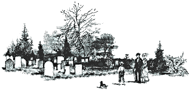

The Edwards
Family
Descendants of William W. Edwards 1. WILLIAM W. EDWARDS was born July 12, 1790 in Chatham County, North Carolina, and died June 01, 1854 in Edwardsville, Cleburne County, Alabama. He married ELIZABETH CLAYTON about 1809. She was born June 01, 1785 in Tennessee, and died February 22, 1854 in Edwardsville, Cleburne County, Alabama. Notes for WILLIAM W. EDWARDS: Information sent to me by Lem Pen. The E-Mail address is as follows: lemPen@aol.com More About WILLIAM W. EDWARDS: Cause of Death: Killed by Lightning Census: 1850, Benton County ,Alabama Occupation: 1850, Farmer Residence: 1833, came to Cleburne County, Alabama More About ELIZABETH CLAYTON: Census: 1850, Benton County, Alabama More About WILLIAM EDWARDS and ELIZABETH CLAYTON: Marriage: Abt. 1809 Children of WILLIAM EDWARDS and ELIZABETH CLAYTON are: i. PETER EDWARDS, b. April 20, 1815, South Carolina; d. November 30, 1902, Cleburne County,Alabama. ii. MARY EDWARDS, b. August 30, 1810.Died in Infancy iii. LEMUEL EDWARDS, b. November 16, 1812, South Carolina; d. July 15, 1903, Edwardsville, Cleburne Co., Alabama. iv. KATHERINE EDWARDS, b. December 14, 1814, South Carolina; d. December 14, 1814, South Carolina. Died in Infancy v. STEPHEN EDWARDS, b. September 27, 1818, South Carolina; d. July 11, 1909, Cleburne County,Alabama. vi. ELIZABETH CAROLINE EDWARDS, b. August 20, 1823, Georgia; d. April 12, 1853. vii. WILLIAM MITCHELL "BILLY" Sr. EDWARDS, b. July 12, 1825, Georgia; d. August 1880, Edwardsville, Cleburne County, Alabama. viii. DICIE EDWARDS, b. March 31, 1826, Georgia; d. January 1874, Tallapoosa, Haralson County, Georgia; m. RICHARDSON L. JR. CHANDLER, August 08, 1850, Anniston, Calhoun Co., Alabama; b. March 05, 1829, Georgia; d. February 08, 1905, Georgia. More About DICIE EDWARDS: Census: 1870, Haralson County,Georgia More About RICHARDSON L. JR. CHANDLER: Burial: 1905, Salem Baptist Church Cemetery,Tallapoosa, Haralson County,Georgia Census: 1870, Haralson County,Georgia More About RICHARDSON CHANDLER and DICIE EDWARDS: Marriage: August 08, 1850, Anniston, Calhoun Co., Alabama ix. JOHN JOSIAH "JOE" EDWARDS, b. October 09, 1829, Hall County,Georgia; d. May 06, 1904, Heflin, Cleburne County, Alabama. x. SARAH JANE EDWARDS, b. June 24, 1832, Alabama. xi. NANCY CAROLINE EDWARDS, b. June 19, 1834; d. October 02, 1913, Albertville, Marshall County, Alabama. xii. LOUISA EDWARDS, b. June 12, 1836, Alabama; d. 1871. Generation No. 2 2. PETER EDWARDS (WILLIAM W) was born April 20, 1815 in South Carolina, and died November 30, 1902 in Cleburne County, Alabama. He married ELIZABETH JANE "JENCIE" GAINES June 30, 1836 in Anniston, Benton/Calhoun County, Alabama, daughter of HENRY GAINES and MARY DEATON. She was born April 01, 1815 in Raburn, Georgia, and died August 21, 1891 in Alabama. More About PETER EDWARDS: Burial: 1902, Lower Cane Creek Primitive Baptist Church Cemetery, Cleburne County, Alabama Census: 1840, Benton County, Alabama Occupation: 1850, Farmer More About ELIZABETH JANE "JENCIE" GAINES: Burial: 1891, Lower Cane Creek Cemetery, Cleburne County, Alabama Census: 1850, Benton County, Alabama Occupation: 1870, House Keeper More About PETER EDWARDS and ELIZABETH GAINES: Marriage: June 30, 1836, Anniston, Benton/Calhoun County, Alabama Witnessed: 1836, Married by W.H. Pesnell Children of PETER EDWARDS and ELIZABETH GAINES are: i. STEPHEN CLAYTON5 EDWARDS, b. September 02, 1845, Wehager, Cleburne County, Alabama; d. February 14, 1923, Blount County, Alabama. ii. MARY JANE EDWARDS, b. 1850; d. 1919, Lower Cane Creek Cemetery, Heflin, Cleburne County, Alabama. iii. FRANCES EMMALINE EDWARDS, b. April 29, 1837; d. May 29, 1925, Royal, Blount County, Alabama; m. RICHARD HARPER, July 29, 1869; b. Abt. 1837. More About FRANCES EMMALINE EDWARDS: Burial: Lower Cane Creek Cemetery,Heflin,Cleburne County,Alabama Census: 1850, Benton County,Alabama More About RICHARD HARPER and FRANCES EDWARDS: Marriage: July 29, 1869 iv. MARY ELIZABETH EDWARDS, b. January 25, 1839, Alabama; d. April 28, 1916. v. NANCY MALINDA EDWARDS, b. October 16, 1841, Alabama; d. January 31, 1904, Ruston, Lincoln Parish, Louisiana. vi. DICA J. EDWARDS, b. 1843. More About DICA J. EDWARDS: Census: 1850, Benton County,Alabama vii. WILLIAM HENRY EDWARDS, b. August 20, 1847, Edwardsville, Cleburne Co., Alabama; d. January 13, 1920, Ruston, Lincoln Parish, Louisiana. viii. L. M. EDWARDS, b. Abt. 1850. More About L. M. EDWARDS: Census: 1850, Benton County ,Alabama ix. CINTHIA L. C. EDWARDS, b. 1851; m. M. J. ANDERSON, September 05, 1872, Cleburne County, Alabama; b. Abt. 1851. More About CINTHIA L. C. EDWARDS: Census: 1860, Calhoun County,Alabama Fairplay T15 R11 More About M. ANDERSON and CINTHIA EDWARDS: Marriage: September 05, 1872, Cleburne County,Alabama x. SARAH MATILDA EDWARDS, b. October 24, 1853; m. (1) NESBA "DOC" GREENBURY, Abt. 1870; b. Abt. 1853; m. (2) O. H. BROWN, Abt. 1871; b. Abt. 1853; m. (3) WESLEY BARKER, December 05, 1872, Cleburne Co., Alabama; b. Abt. 1853. More About SARAH MATILDA EDWARDS: Burial: Bethel Cemetery,Cullman,Alabama Census: 1860, Calhoun County,Alabama Fairplay T15 R11 xi. ARTEMISA M. LUCINDA EDWARDS, b. November 25, 1855; d. February 27, 1934; m. THOMAS J. BARKER, July 04, 1889, Cleburne County,Alabama; b. September 02, 1860; d. February 21, 1909. More About ARTEMISA M. LUCINDA EDWARDS: Burial: 1934, Lower Cane Creek Cemetery,Heflin,Cleburne County,Alabama Census: 1860, Calhoun County,Alabama Fairplay T15 R11 More About THOMAS J. BARKER: Burial: 1909, Lower Cane Creek Cemetery,Heflin,Cleburne County,Alabama xii. MARIAH NAOMIE A. EDWARDS, b. April 06, 1857, Cleburne County, Alabama; d. September 16, 1888, Lower Cane Creek Cemetery, Heflin, Cleburne County, Alabama. More About MARIAH NAOMIE A. EDWARDS: Census: 1860, Calhoun County, Alabama Fairplay T15 R11 xiii. MANERVA EDWARDS, b. 1861. More About MANERVA EDWARDS: Census: 1870, Cleburne County, Alabama 3. LEMUEL EDWARDS (WILLIAM W.) was born November 16, 1812 in South Carolina, and died July 15, 1903 in Edwardsville, Cleburne Co., Alabama. He married (1) FRANCES MARY HOGAN February 21, 1837 in Benton County, Alabama, daughter of WILLIAM HOGAN and NANCY DIAL. She was born November 01, 1818 in Georgia, and died March 09, 1892 in Edwardsville, Cleburne Co., Alabama. He married (2) SARAH HOGAN June 11, 1893, daughter of WILLIAM HOGAN and NANCY DIAL. She was born July 05, 1833, and died September 14, 1901. More About LEMUEL EDWARDS: Burial: 1903, Lower Cane Creek Primitive Baptist Church Cemetery,Cleburne County,Alabama Census: 1870, Wekaga,Cleburne County,Alabama Occupation: Farmer More About FRANCES MARY HOGAN: Burial: 1892, Lower Cane Creek Primitive Baptist Church Cemetery,Cleburne County,Alabama More About LEMUEL EDWARDS and FRANCES HOGAN: Marriage: February 21, 1837, Benton County,Alabama More About LEMUEL EDWARDS and SARAH HOGAN: Marriage: June 11, 1893 Children of LEMUEL EDWARDS and FRANCES HOGAN are: i. AMANDA M. ELIZABETH EDWARDS, b. April 09, 1842, Cleburne Co., Alabama; d. June 29, 1930, Heflin, Cleburne Co., Alabama. ii. NANCY ANN EDWARDS, b. September 26, 1845, Alabama; d. August 23, 1928, Heflin, Cleburne Co., Alabama. iii. SARAH MARGARET EDWARDS, b. August 31, 1847, Alabama; d. February 13, 1907; m. WILLIAM MC MILLIAN TOLLESON, April 17, 1864, Anniston, Calhoun Co., Alabama; b. Abt. 1847. More About WILLIAM TOLLESON and SARAH EDWARDS: Marriage: April 17, 1864, Anniston, Calhoun Co., Alabama iv. ANDREW JACKSON EDWARDS, b. September 1850; d. Aft. 1918; m. (1) JANE WHALEN, October 04, 1860, Calhoun Co., Alabama; b. Abt. 1850; m. (2) NANCY A. HOWLE, December 08, 1878; b. Abt. 1850. More About ANDREW EDWARDS and JANE WHALEN: Marriage: October 04, 1860, Calhoun County, Alabama More About ANDREW EDWARDS and NANCY HOWLE: Marriage: December 08, 1878 . v. WILLIAM ELIJAH EDWARDS, b. April 16, 1852, Edwardsville, Cleburne Co., Alabama; d. December 12, 1928, Newell, Randolph Co., Alabama. vi. SILAS L. EDWARDS, b. October 14, 1861, Alabama; d. June 11, 1898, Alabama; m. MABEL PITTMAN, October 28, 1883, Heflin, Cleburne Co., Alabama; b. Abt. 1861. More About SILAS L. EDWARDS: Burial: 1898, Lower Cane Creek Cemetery,Heflin,Cleburne County,Alabama 4. STEPHEN EDWARDS (WILLIAM W.) was born September 27, 1818 in South Carolina, and died July 11, 1909 in Cleburne County,Alabama. He married (1) SANSIS UNKNOWN. She was born 1843. He married (2) MARIAH CHANDLER August 25, 1842 in Anniston, Calhoun Co., Alabama, daughter of RICHARDSON CHANDLER and FRANCES SHIELDS. She was born February 23, 1824 in Madison County,Georgia, and died April 21, 1891 in Calhoun County,Alabama. More About STEPHEN EDWARDS: Burial: 1909, Lower Cane Creek Primitive Baptist Church Cemetery,Cleburne County,Alabama Occupation: Owned and operated a flour mill in Edwardsville,Cleburne County,Alabama More About MARIAH CHANDLER: Burial: 1891, Lower Cane Creek Primitive Baptist Church Cemetery,Cleburne County,Alabama More About STEPHEN EDWARDS and MARIAH CHANDLER: Marriage: August 25, 1842, Anniston, Calhoun Co., Alabama Children of STEPHEN EDWARDS and MARIAH CHANDLER are: i. FRANCES ELIZABETH EDWARDS, b. June 18, 1843; m. JOHN H. BURGESS, Abt. 1863; b. Abt. 1843. More About JOHN BURGESS and FRANCES EDWARDS: Marriage: Abt. 1863 ii. MILEY JANE EDWARDS, b. October 10, 1844; d. June 14, 1923; m. (1) JAMES RHODES WARREN, December 08, 1859, Calhoun Co., Alabama; b. Abt. 1844; m. (2) GEORGE WASHINGTON WARREN, November 14, 1868, Cleburne County,Alabama; b. May 12, 1842; d. May 29, 1892. More About MILEY JANE EDWARDS: Burial: 1923, Lower Cane Creek Cemetery,Heflin,Cleburne County,Alabama More About JAMES WARREN and MILEY EDWARDS: Marriage: December 08, 1859, Calhoun Co., Alabama More About GEORGE WASHINGTON WARREN: Burial: 1892, Lower Cane Creek Cemetery,Heflin,Cleburne County,Alabama More About GEORGE WARREN and MILEY EDWARDS: Marriage: November 14, 1868, Cleburne County,Alabama iii. WILLIAM R. "BUD" EDWARDS, b. June 03, 1846; d. September 09, 1920, Edwardsville, Cleburne Co., Alabama; m. (1) LYDIA JOHNSON HAMMETT, October 01, 1864; b. June 11, 1846; d. February 22, 1896; m. (2) SARAH JANE HARRIS, 1896; b. 1853. More About WILLIAM R. "BUD" EDWARDS: Burial: 1920, Lower Cane Creek Cemetery,Heflin,Cleburne County,Alabama Census: April 1865, ended service with CSA Military service: November 1863, enlisted at Talledega,AL for CSA More About LYDIA JOHNSON HAMMETT: Burial: Douglas Cemetery,Lincoln Parish,Louisiana More About WILLIAM EDWARDS and LYDIA HAMMETT: Marriage: October 01, 1864 More About WILLIAM EDWARDS and SARAH HARRIS: Marriage: 1896 iv. MARY ANN EDWARDS, b. August 18, 1848; d. February 18, 1930; m. JOE MILES BROWN, April 18, 1866, Calhoun County,Alabama; b. Abt. 1848. Marriage Notes for MARY EDWARDS and JOE BROWN: Marriages of Calhoun County,Alabama - J.M. Brown and Mary Ann D. Edwards license applied 4/16/1865 no return page 29 " " " " 4/16/1866 returned 4/18/1866 page 86 book was located at Cullman Public Library.Cullman,Cullman County,Alabama More About JOE BROWN and MARY EDWARDS: Marriage: April 18, 1866, Calhoun County,Alabama v. CINDERELLA EDWARDS, b. June 29, 1853; d. 1927; m. DR. R. T. REID, September 17, 1869; b. October 02, 1843; d. August 13, 1906. More About R. REID and CINDERELLA EDWARDS: Marriage: September 17, 1869 vi. LOUISA MINERVA EDWARDS, b. May 17, 1854; d. November 19, 1923, Cleburne Co., Alabama; m. GREEN BERRY TOLLESON, March 09, 1871, Cleburne Co., Alabama; b. August 01, 1850; d. December 03, 1895. More About LOUISA MINERVA EDWARDS: Burial: 1923, Lower Cane Creek Cemetery,Heflin,Cleburne County,Alabama More About GREEN BERRY TOLLESON: Burial: 1895, Lower Cane Creek Cemetery,Heflin,Cleburne County,Alabama vii. LEMUEL B. EDWARDS, b. June 09, 1857; d. May 22, 1933, Cleburne Co., Alabama. viii. (INFANT) EDWARDS, b. January 20, 1860; d. January 20, 1860. ix. C. J. EDWARDS, b. July 20, 1861; d. July 20, 1861. x. B. R. EDWARDS, b. July 20, 1861; d. July 20, 1861. xi. CALDONA EDWARDS, b. Abt. 1867; d. Aft. 1867. 5. ELIZABETH CAROLINE EDWARDS (WILLIAM W) was born August 20, 1823 in Georgia, and died April 12, 1853. She married JOHN CULPEPPER HOGAN December 28, 1843 in Anniston, Calhoun Co., Alabama. He was born September 15, 1821 in Jackson County,Georgia, and died May 1860 in Benton County,Alabama. More About ELIZABETH CAROLINE EDWARDS: Census: 1850, Benton County,Alabama More About JOHN CULPEPPER HOGAN: Burial: Old Edwards Cemetery,Edwardsville,Alabama Cause of Death: Pneumonia Census: 1850, Benton County,Alabama Children of ELIZABETH EDWARDS and JOHN HOGAN are: i. IRVING DEAL HOGAN, b. April 21, 1845, Alabama; d. December 07, 1920, Louisiana. ii. W.R. HOGAN, b. 1848, Alabama. More About W.R. HOGAN: Census: 1850, Benton County,Alabama iii. L. HOGAN, b. 1848, Alabama. More About L. HOGAN: Census: 1850, Benton County,Alabama iv. D. HOGAN, b. 1850, Alabama. More About D. HOGAN: Census: 1850, Benton County,Alabama 6. WILLIAM MITCHELL "BILLY" EDWARDS Sr. (WILLIAM W) was born July 12, 1825 in Georgia, and died August 1880 in Edwardsville, Cleburne County, Alabama. He married JOYCE BABER August 19, 1841 in Anniston, Calhoun Co., Alabama. She was born Abt. 1826, and died Aft. 1862. More About SR. WILLIAM MITCHELL "BILLY" EDWARDS: Cause of Death: Struck by lightning More About WILLIAM EDWARDS and JOYCE BABER: Marriage: August 19, 1841, Anniston, Calhoun Co., Alabama Children of WILLIAM EDWARDS and JOYCE BABER are: i. RHODA ELIZABETH EDWARDS, b. 1842; m. GEORGE W. WARREN, November 14, 1867, Cleburne Co., Alabama; b. Abt. 1842. ii. R. B. EDWARDS EDWARDS, b. Abt. 1844; m. AUGUSTA HOWLE, September 21, 1882, Cleburne Co., Alabama; b. Abt. 1844. iii. JANE EDWARDS, b. Abt. 1845. iv. NEWTON H. EDWARDS, b. Abt. 1847; m. ELIZA WARREN, January 04, 1864, Calhoun Co., Alabama; b. Abt. 1847. v. NANCY EDWARDS, b. Abt. 1850. vi. MARY EDWARDS, b. Abt. 1852. vii. SARAH EDWARDS, b. Abt. 1854. viii. WILLIAM MITCHELL EDWARDS Jr., b. October 29, 1856; d. February 02, 1933, Cleburne Co., Alabama; m. SARAH MCCOY, Abt. 1881; b. March 21, 1861; d. August 03, 1934. ix. DICA EDWARDS, b. Abt. 1857. x. LEMUEL EDWARDS, b. Abt. 1859. 7. JOHN JOSIAH "JOE" EDWARDS (WILLIAM W.) was born October 09, 1829 in Hall County,Georgia, and died May 06, 1904 in Heflin, Cleburne County, Alabama. He married SARAH ANN HOLLEY January 10, 1850 in Anniston, Calhoun Co., Alabama, daughter of JOHN HOLLEY and SARAH MORGAN. She was born December 21, 1829, and died February 21, 1920 in Heflin, Cleburne County, Alabama. Children of JOHN EDWARDS and SARAH HOLLEY are: i. ELIZABETH EDWARDS. ii. LUCINDA EDWARDS. iii. LOUISA EDWARDS. iv. WILLIAM EDWARDS. v. JOHN STEPHEN EDWARDS, b. May 17, 1859; d. May 14, 1926. vi. POLLYANNA EDWARDS. vii. TABITHA EDWARDS. viii. MARIAH EDWARDS. 8. NANCY CAROLINE EDWARDS (WILLIAM W.) was born June 19, 1834, and died October 02, 1913 in Albertville, Marshall County, Alabama. She married JOHN ALEXANDER WALKER May 16, 1850 in Anniston, Calhoun Co., Alabama. He was born Abt. 1833. More About NANCY CAROLINE EDWARDS: Residence: 1877, moved to Cherokee County ,Alabama Children of NANCY EDWARDS and JOHN WALKER are: i. WILLIAM A. WALKER, b. Abt. 1850. ii. LOUISE E. WALKER, b. Abt. 1852. iii. PETER M. WALKER, b. Abt. 1854. 9. LOUISA EDWARDS (WILLIAM W) was born June 12, 1836 in Alabama, and died 1871. She married MOSES MIXON CHANDLER September 13, 1855 in Calhoun County,Alabama, son of RICHARDSON CHANDLER and FRANCES SHIELDS. He was born May 08, 1831 in Walton County,Georgia, and died April 24, 1892 in Lincoln Parish,Louisiana. More About MOSES MIXON CHANDLER: Burial: Douglas Cemetery,Lincoln Parish,Louisiana Children of LOUISA EDWARDS and MOSES CHANDLER are: i. AMANDA ELIZABETH CHANDLER. ii. WILLIAM RICHARDS CHANDLER. Generation No. 3 10. STEPHEN CLAYTON EDWARDS (PETER, WILLIAM W.) was born September 02, 1845 in Wehager,Cleburne County,Alabama, and died February 14, 1923 in Blount County,Alabama. He married (1) ELIZA COGGINS Abt. 1865. She was born Abt. 1845. He married (2) FRANCES PELONA BROWN September 15, 1867 in Cleburne County,Alabama, daughter of PETER BROWN and POLLY CHANDLER. She was born May 09, 1851 in Alabama, and died January 06, 1882 in Lower Cane Creek,Cleburne County,Alabama. He married (3) FRANCINIA ANN LITTLES Abt. 1897, daughter of WILLIAM LITTLES and ELIZABETH MOORE. She was born 1858 in Rome,Floyd County,Georgia, and died 1921 in Blount County,Alabama. Notes for STEPHEN CLAYTON EDWARDS: Rody,Janney, and Lene W are not listed as who children they belong to. The 1900 Etowah County,Alabama census lists Mary as the only daughter by Stephen and Francine's marriage. Stephen and Pelona lived outside of Edwardsville,Alabama. 18th Alabama Infantry Regiment The 18th Alabama Infantry Regiment was organized at Auburn, 4 Sept 1861, with men recruited from Butler, Coffee, Coosa, Covington, Jefferson, Pike, Shelby, and Tuscaloosa counties, and the field officers were appointed by President Jefferson Davis. A few weeks later, it went to Mobile, by way of Huntsville, and was there brigaded under Gen'l Adley Hogan Gladden of Louisiana, with the 19th, 20th, 22nd, and 25th AL regiments, Jones Mitchell Withers' Division. Ordered to Corinth in March 1862, the regiment was there brigaded under Gen'l J. K. Jackson of Georgia, with the 17th and 19th AL regiments. The 18th fought the first day at Shiloh and was detailed to escort the brigade of USA Gen'l Benjamin Mayberry Prentiss, which it had largely aided to capture, to the rear, and it did not take part the second day. After the battle, the regiment being without field officers and was for a short time under officers detailed for the purpose. It was under fire at Blackland, and soon after was sent to Mobile under the command of Gen'ls James Edwin Slaughter and Alfred Cumming. There the 18th remained until April 1863, when it rejoined the Army of Tennessee, in a brigade with the 36th and 38th AL regiments, and the 9th AL Battalion (the latter being soon after raised to the 58th AL regiment, and consolidated subsequently with the 32nd AL), commanded successively by Gen'ls Henry DeLamar Clayton of Barbour, James Thadeus Holtzclaw of Montgomery, and Col. Bushrod Jones of Perry. At Chickamauga, the 18th lost 22 out of 36 officers, and 300 out of 500 men, killed and wounded. At Missionary Ridge, the 18th was engaged, and lost about 90 men, principally captured. Having wintered at Dalton, it began the Dalton-Atlanta campaign with 500 effective men, and fought all the way down to Jonesboro, losing constantly in killed and wounded, but with no severe loss at any one place. It lost very nearly half its number during the campaign, and rendered effective service. The regiment went with Gen'l John Bell Hood into Tennessee, and lost about 100 at Franklin, principally captured. When the army moved to the Carolinas in February 1865, the regiment was ordered to Mobile, and placed in the field works at Spanish Fort. It participated prominently in the siege of that place several weeks later, with some loss and escaped when the defenses were evacuated. It surrendered at Meridian, MS, 4 May 1865, with the military department. The army numbered 858 men in January 1861; it lost 20 k and 80 w at Shiloh, and 56% of the 527 engaged at Chickamauga. It had 209 casualties in Chattanooga and was reduced to 275 effectives in November 1864. Field and staff officers: Cols. Edward Courtney Bullock (died, 1861); James Thadeus Holtzclaw; Eli Sims Shorter (retired, 10 May 1862); and James Strawbridge (temporary); Lt. Cols. Peter Forney Hunley; Richard Freer Inge (died, 28 Sept 1863); and Majors William M. Moxley (retired, 21 Nov 1862 Sheppard Ruffin; Bryan Morel Thomas (temporary). Captains and counties from which the companies came: Co. "A", Bullock Guards (Coffee County): William Morel Moxley (promoted); B. W. Starke (wounded, Shiloh; resigned, 19 July 1862); Joseph H. Justice (KIA, Chicamauga); Noah O. Hutchinson Co. "B", Covington Hunters (Covington County): James T. Brady (resigned, 24 Feb 1862); S. D. McLelen (resigned, 28 Aug 1862); Orville A. Stringer (from Co. "D"; KIA, Chicamauga); Thomas Hardwick Co. "C", Cahaba Valley Rangers (Jefferson County): James M. Oliver (discharged, 1 July 1863); James M. McLaughlin Co. "D", Coosa Farmers (Coosa County): Guy Smith (discharged, 25 Feb 1862); Charles M. Cox (resigned, 29 Dec 1862); J. Henry Hammond (KIA, Chicamauga); George M. Williams (wounded, Chicamauga; captured, Franklin) Co. "E", Confederate Stars (Tuscaloosa County): Richard F. Inge (promoted); S. C. Wilkerson (captured, Missionary Ridge) Co. "F" Tom Watts Rifles (Butler County): H. Clay Armstrong (resigned, 20 Sept 1862); Aug. C. Greene (wounded, Jonesboro) Co. "G", Yancey Guards [or Yancey Rangers] (Jefferson County): James Haughey (resigned, 27 May 1862) H. P. Walker Co. "H" A. B. Moore's Invincibles (Pike County): W. L. Hammer (promoted to Surgeon); Sheppard Ruffin (promoted); Sherman K. Fielder (KIA, Chicamauga); James B. Darby (wounded, New Hope Church); T. J. Sims (Lt. commanding) Co. "I", Curry Guards (Shelby County): Peter F. Hunley (wounded, Shiloh; promoted); John M. Mickle (KIA, Chicamauga); Martin Co. "K", Confederate Blues (Talladega County): John J. Calhoun (resigned); H. Clay Stone (wounded, Chicamauga; resigned, 27 April 1864); Thomas M. Books Available on the18th Alabama Infantry Regiment- Inzer, John Washington. The Diary of a Confederate Soldier: John Washington Inzer, 1834-1928. Ed. by Mattie Lou Teague Crow (Huntsville : Strode Publishers, 1977) Jones, Edgar W. "History of the 18th Alabama Infantry Regiment," in Jones Valley Times, (1904-1905) [reprinted, Mountain Brook, AL : Z. Geier, 1994] Morel, William Moxley. "Oh, What a Loansome Time I Had" : The Civil War Letters of Maj. William Morel Moxley, Eighteenth Alabama Infantry, and Emily Beck Moxley, ed. by Thomas W. Cutrer (Tuscaloosa : University of Alabama Press, 2002) Pulcrano, C. David A., ed.History of the Eighteenth Alabama Infantry Regiment. (Birmingham : C.D.A. Pulcrano, 1994) More About STEPHEN CLAYTON EDWARDS: Burial: 1923, Gibbs Chapel Cemetery,Blount County,Alabama Census: 1850, Benton County,Alabama Military service: October 1863, Pvt Co E 18th Reg. AL INF Confederate Residence: 1884, moved to Blount County,AL Marriage Notes for STEPHEN EDWARDS and ELIZA COGGINS: Marriage Annulled More About FRANCES PELONA BROWN: Burial: 1882, Lower Cane Creek Cemetery,Heflin,Cleburne County,Alabama Census: 1860, Calhoun County,Alabama Fairplay T15 R11 Medical Information: Died while giving birth to 8th child ,Lemmie Ransom. More About FRANCINIA ANN LITTLES: Burial: 1921, Gibbs Chapel Cemetery,Blount County,Alabama Census: 1920, Etowah County,Alabama Children of STEPHEN EDWARDS and FRANCES BROWN are: i. MARTHA ANN EMILINE EDWARDS, b. June 15, 1866, Alabama; d. August 02, 1955, Cullman,Cullman County,Alabama. ii. PETER WASHINGTON EDWARDS, b. October 04, 1872, Edwardsville,Cleburne County,Alabama; d. December 30, 1950, Piedmont,Calhoun County,Alabama. iii. JENCIE LUCINDA EDWARDS, b. June 20, 1873, Cleburne Co., Alabama; d. October 05, 1954, Marshall County,Alabama; m. JOHN DAVID HANEY; b. August 23, 1862; d. June 13, 1928. More About JENCIE LUCINDA EDWARDS: Burial: 1954, Hopewell Missionary Baptist Church Cemetery,Rainbow Crossing,Blount County,Alabama Census: 1880, Cleburne County,Alabama Beat 4 Tp15 R11 Residence: 1950, Arab,Marshall County,Alabama More About JOHN DAVID HANEY: Burial: 1928, Hopewell Missionary Baptist Church Cemetery,Rainbow Crossing,Blount County,Alabama iv. RHODA O. EDWARDS, b. December 1876, Cleburne Co., Alabama; m. JOHN MARTIN. More About RHODA O. EDWARDS: Census: 1880, Cleburne County,Alabama Beat 4 Tp 15 R 11 v. MILLIE JANE EDWARDS, b. August 10, 1878, Cleburne Co., Alabama; d. October 03, 1939; m. MARVIN JACKSON TOWNS. More About MILLIE JANE EDWARDS: Census: 1880, Cleburne County,Alabama Beat 4 Tp15 R11 vi. ARTIE MELISA EDWARDS, b. October 05, 1877, Cleburne County,Alabama; d. June 10, 1925, Kileen,Coryell County,Texas. vii. LEMUEL RANSOME EDWARDS, b. September 18, 1881, Edwardsville,Cleburne County,Alabama; d. January 01, 1968, McAlister,Pittsburgh County,Oklahoma. viii. WILLIAM ALBERT EDWARDS, b. March 15, 1870, Cleburne County,Alabama; d. March 12, 1939, Heflin,Cleburne County,Alabama. Children of STEPHEN EDWARDS and FRANCINIA LITTLES are: ix. RODY EDWARDS, b. December 1876. More About RODY EDWARDS: Census: 1900, Etowah County,Alabama x. JENNY EDWARDS, b. October 1877. More About JENNY EDWARDS: Census: 1900, Etowah County,Alabama xi. LENI EDWARDS, b. September 1879. More About LENI EDWARDS: Census: 1900, Etowah County,Alabama . xii. MARY MATILDA EDWARDS, b. November 11, 1888, Floyd County,Georgia; d. February 20, 1953, Cullman County,Alabama. 11. MARY JANE EDWARDS (PETER, WILLIAM W3) was born 1850, and died 1919 in Lower Cane Creek Cemetery,Heflin,Cleburne County,Alabama. She married NEWTON BROWN, son of PETER BROWN and POLLY CHANDLER. He was born February 14, 1847 in Gwinett County,Georgia, and died October 12, 1890. More About NEWTON BROWN: Census: 1860, Calhoun County,Alabama Fairplay T15 R11 Children of MARY EDWARDS and NEWTON BROWN are: i. NANCY BROWN, m. JIM EVANS. ii. LIZZIE BROWN, m. GEORGE BOBO. iii. EDITH BROWN. iv. CARRIE BROWN. v. WILLIAM WILEY BROWN, b. October 19, 1868; d. July 11, 1941. vi. STEPHEN R. BROWN, b. 1870, Cleburne County,Alabama; d. 1962, Prentiss County,Mississippi. vii. CALVIN JOHNSON BROWN, b. 1877; d. 1938. viii. WELCOME GOLIATH BROWN, b. May 24, 1878, Flowery Branch,Georgia; d. February 06, 1970, Heflin,Alabama. 12. MARY ELIZABETH EDWARDS (PETER, WILLIAM W.) was born January 25, 1839 in Alabama, and died April 28, 1916. She married ELDER MARION BROWN May 02, 1869 in Cleburne County,Alabama, son of PETER BROWN and POLLY CHANDLER. He was born October 09, 1844 in Georgia, and died December 28, 1906. More About MARY ELIZABETH EDWARDS: Census: 1850, Benton County,Alabama More About ELDER MARION BROWN: Burial: 1906, Lower Cane Creek Cemetery,Heflin,Cleburne County,Alabama Census: 1860, Calhoun County,Alabama Fairplay T15 R11 Occupation: Primitive Baptist Preacher at Lower Cane Creek Prim.Bap. Church,Heflin,Alabama Children of MARY EDWARDS and ELDER BROWN are: i. BERRY N. BROWN, b. Calhoun County,Alabama. ii. R.W. BROWN, b. February 23, 1870; d. July 20, 1883. iii. J.E. BROWN, b. February 19, 1871; d. June 13, 1877. iv. WYATT MADISON BROWN, b. April 29, 1872, Cleburne County,Alabama; d. March 23, 1904. v. P.R. BROWN, b. December 22, 1873; d. March 15, 1898. vi. M.L. BROWN, b. March 09, 1875; d. June 29, 1887. vii. S.R. BROWN, b. April 30, 1876; d. October 15, 1876. viii. W.R. BROWN, b. October 28, 1877; d. October 14, 1902. ix. IRA ANNANIAS BROWN, b. August 15, 1878, Anniston,Alabama; d. 1923, Griffin,Georgia. 13. NANCY MALINDA EDWARDS (PETER, WILLIAM W.) was born October 16, 1841 in Alabama, and died January 31, 1904 in Ruston, Lincoln Parish, Louisiana. She married JOHN WESLEY SR. STEWART May 14, 1857 in Benton(now Calhoun) County,Alabama, son of JAMES STEWART and ELIZABETH INGRAM. He was born February 01, 1836 in Benton(now Calhoun) County,Alabama, and died November 23, 1906 in Ruston, Lincoln Parish, Louisiana. More About NANCY MALINDA EDWARDS: Burial: 1904, Riser Cemetery,Lincoln Parish,Lousiana Census: 1850, Benton County,Alabama Residence: 1861, Moved to Louisiana from Edwardsville,Alabama More About JOHN WESLEY SR. STEWART: Burial: 1906, Riser Cemetery,Lincoln Parish,Lousiana Residence: 1861, Moved to Louisiana from Edwardsville,Alabama Children of NANCY EDWARDS and JOHN STEWART are: i. RHODA NARCISSUS STEWART, b. May 21, 1858, Calhoun Co., Alabama; d. 1904, Ruston, Lincoln Parish, Louisiana. ii. JESSIE ELIZABETH SUZANNE STEWART, b. December 29, 1859, Calhoun Co., Alabama; d. August 05, 1948, Ruston, Lincoln Parish, Louisiana. iii. JOHN WESLEY JR. STEWART, b. March 04, 1862; d. November 27, 1887, Lincoln Parish, Louisiana. iv. WILLIAM IVORY STEWART, b. November 26, 1866, Ruston, Lincoln Parish, Louisiana; d. July 14, 1942, Munday, Knox Co., Texas; m. (1) MARY L. EDWARDS, December 27, 1891, Lincoln P., Louisana; b. December 27, 1871, Ruston, Lincoln Parish, Louisiana; d. March 14, 1910, Breckenridge, Stephens Co., Texas; m. (2) MARY LEA, June 27, 1916, Texas; b. November 17, 1873, Senatobia, Tate Co., Mississippi; d. January 23, 1967, Texas. v. FRANCES EMELINE STEWART, b. December 09, 1874, Jackson Parish, Louisana; d. April 16, 1957, Louisiana. 14. WILLIAM HENRY EDWARDS (PETER, WILLIAM W.) was born August 20, 1847 in Edwardsville, Cleburne Co., Alabama, and died January 13, 1920 in Ruston, Lincoln Parish, Louisiana. He married (1) MARY Y. LINER. She was born 1858 in Georgia, and died 1935 in Louisiana. He married (2) CATHERINE YOUNG "KATTIE" TOLLESON Abt. 1865. She was born May 08, 1848 in Alabama, and died January 09, 1891 in Louisiana. More About WILLIAM HENRY EDWARDS: Burial: 1920, Douglas Cemetery,Lincoln Parish,Louisiana Census: 1850, Benton County,Alabama Military service: 62nd AL Co B, CSA Residence: 1881, moved family to Louisiana More About MARY Y. LINER: Burial: Douglas Cemetery,Lincoln Parish,Louisiana More About CATHERINE YOUNG "KATTIE" TOLLESON: Burial: 1891, Douglas Cemetery,Lincoln Parish,Louisiana Children of WILLIAM EDWARDS and MARY LINER are: i. ANNIE LEE EDWARDS, b. 1893, Louisiana; d. 1933, Louisiana. ii. SIMMIE EDWARDS, b. 1896, Louisiana; d. 1943, Louisiana; m. MARGIE COBB. More About SIMMIE EDWARDS: Burial: Douglas Cemetery,Lincoln Parish,Louisiana Military service: Army, WWI Children of WILLIAM EDWARDS and CATHERINE TOLLESON are: iii. MARY JANE EDWARDS, b. July 12, 1865; d. 1928, Louisiana. iv. SARAH ELIZABETH EDWARDS, b. July 10, 1867; d. May 17, 1923, Louisiana. v. WILLIAM IRA EDWARDS, b. 1872, Edwardsville, Cleburne Co., Alabama; d. 1923, Louisiana; m. ALICE GOINS, Louisiana. vi. PETER JESSE EDWARDS, b. February 19, 1877; d. February 12, 1938, Louisiana. vii. STEPHEN BERRY EDWARDS, b. December 05, 1878; d. 1916, Louisiana; m. ESSIE TAYLOR, Louisiana. viii. ELIJAH AGUSTUS "GUS" EDWARDS, b. August 26, 1880; d. 1936, Louisiana; m. FANNIE HOGAN, Louisiana. ix. CLEBURNE WRIGHT "CLEVE" EDWARDS, b. February 24, 1883, Louisiana; d. March 30, 1964, Ruston, Lincoln Parish, Louisiana; m. OMA PEARL ELLIOTT, June 04, 1922, Ruston, Lincoln Parish, Louisiana; b. September 11, 1896, Dodson, Winn Co., Louisiana; d. November 17, 1987, Ruston, Lincoln Parish, Louisiana. More About CLEBURNE WRIGHT "CLEVE" EDWARDS: Burial: Greenwood Cemetery,Ruston,Lincoln Parish,Louisiana More About OMA PEARL ELLIOTT: Burial: Greenwood Cemetery,Ruston,Lincoln Parish,Louisiana x. NANCY EDWARDS, b. April 10, 1885, Louisiana; d. March 14, 1970, Louisiana. xi. CATHERINE ELIZABETH "KATIE" EDWARDS, b. May 11, 1887, Louisiana; d. 1961, Louisiana; m. WILLIAM COLLINS, Louisiana. xii. MINNIE AGNES EDWARDS, b. September 24, 1889, Louisiana; d. 1954, Louisiana; m. ALLEN EDWARD LARANCE, Louisiana; b. 1887; d. 1948. More About MINNIE AGNES EDWARDS: Burial: Greenwood Cemetery,Ruston,Lincoln Parish,Louisiana More About ALLEN EDWARD LARANCE: Burial: Greenwood Cemetery,Ruston,Lincoln Parish,Louisiana xiii. LUCINDA EDWARDS, b. October 15, 1873; d. February 22, 1935. 15. AMANDA M. ELIZABETH EDWARDS (LEMUEL, WILLIAM W.) was born April 09, 1842 in Cleburne Co., Alabama, and died June 29, 1930 in Heflin, Cleburne Co., Alabama. She married JOHN A. J. TOLLESON Sr. November 11, 1858 in Heflin, Cleburne Co., Alabama. He was born Abt. 1842, and died Abt. 1915. Children of AMANDA EDWARDS and JOHN TOLLESON are: i. JOHN A. J. TOLLESON Jr., b. Abt. 1860. ii. ELIAS TOLLESON, b. Abt. 1862. iii. L. A. TOLLESON, b. Abt. 1864. 16. NANCY ANN EDWARDS (LEMUEL, WILLIAM W.) was born September 26, 1845 in Alabama, and died August 23, 1928 in Heflin, Cleburne Co., Alabama. She married JOHN ALEXANDER HENRY July 17, 1865 in Anniston, Calhoun Co., Alabama. He was born Abt. 1845. Children of NANCY EDWARDS and JOHN HENRY are: i. CINDERELLA HENRY, b. Abt. 1867. ii. UNKNOWN HENRY, b. Abt. 1869. iii. SHERMAN HENRY, b. Abt. 1871. 17. WILLIAM ELIJAH EDWARDS (LEMUEL WILLIAM W.) was born April 16, 1852 in Edwardsville, Cleburne Co., Alabama, and died December 12, 1928 in Newell, Randolph Co., Alabama. He married RHODA MAE LINER September 17, 1869 in Edwardsville, Cleburne Co., Alabama, daughter of JOHN LINER and LEMILA CHANDLER. She was born September 03, 1853 in Walton Co., Georgia, and died March 30, 1945 in Cleburne Co., Alabama. More About WILLIAM ELIJAH EDWARDS: Burial: 1928, Lower Cane Creek Cemetery,Heflin,Cleburne County,Alabama More About RHODA MAE LINER: Burial: 1945, Lower Cane Creek Cemetery,Heflin,Cleburne County,Alabama Children of WILLIAM EDWARDS and RHODA LINER are: i. JOHN L. EDWARDS, b. Abt. 1872, Cleburne Co., Alabama; m. T. A. NORTON, December 23, 1892, Cleburne Co., Alabama; b. Abt. 1872. ii. SANDIE VIRGINIA "VIRGIE" EDWARDS, b. 1874, Cleburne Co., Alabama; d. 1966; m. JAMES ALBURN NORTON, Abt. 1896; b. 1875; d. 1933. More About SANDIE VIRGINIA "VIRGIE" EDWARDS: Burial: 1966, Lower Cane Creek Cemetery,Heflin,Cleburne County,Alabama More About JAMES ALBURN NORTON: Burial: 1933, Lower Cane Creek Cemetery,Heflin,Cleburne County,Alabama iii. WILLIAM IRVIN EDWARDS, b. March 04, 1876, Cleburne Co., Alabama; d. March 18, 1939, Edwardsville, Cleburne Co., Alabama. iv. MILA J. EDWARDS, b. Abt. 1878, Cleburne Co., Alabama; d. September 27, 1968; m. COLUMBUS J. BRAGG, December 20, 1908; b. January 03, 1880; d. August 06, 1966. v. GUSTON ZEBDEE EDWARDS, b. August 06, 1881, Cleburne Co., Alabama; d. September 08, 1924. vi. LUVODIA EDWARDS, b. February 1884, Cleburne Co., Alabama; m. GEORGE R. VAUGHN, Abt. 1904; b. Abt. 1884. vii. ELIZABETH EDWARDS, b. February 1886, Cleburne Co., Alabama; m. J. B. WILLINGHAM, Abt. 1906; b. Abt. 1886. viii. LEMON JACKSON EDWARDS, b. May 02, 1887, Cleburne County, Alabama; d. December 10, 1945, Cedartown, Polk County, Georgia. ix. HAMILTON EDWARDS, b. April 13, 1890, Cleburne Co., Alabama; d. October 24, 1903. x. HESTER EDWARDS, b. October 1891, Cleburne Co., Alabama; m. DAN MCCORD, Abt. 1911; b. Abt. 1891; d. Randolph Co., Alabama. xi. PEARL L. EDWARDS, b. September 28, 1895, Cleburne Co., Alabama; d. February 11, 1980; m. CHARLES A. KENNEDY, Abt. 1915; b. June 12, 1892; d. June 08, 1966. 18. LEMUEL B. EDWARDS (STEPHEN, WILLIAM W.) was born June 09, 1857, and died May 22, 1933 in Cleburne Co., Alabama. He married NANCY MARGARET EDMONDSON October 01, 1874 in Cleburne Co., Alabama. She was born February 06, 1853, and died September 16, 1924. More About LEMUEL B. EDWARDS: Burial: 1933, Lower Cane Creek Cemetery,Heflin,Cleburne County,Alabama More About NANCY MARGARET EDMONDSON: Burial: 1924, Lower Cane Creek Cemetery,Heflin,Cleburne County,Alabama Child of LEMUEL EDWARDS and NANCY EDMONDSON is: i. SAMUEL EDWARDS, b. January 16, 1882, Cleburne County,Alabama; d. 1978, Cleburne County,Alabama. 19. IRVING DEAL HOGAN (ELIZABETH CAROLINE EDWARDS, WILLIAM W.) was born April 21, 1845 in Alabama, and died December 07, 1920 in Louisiana. He married NANCY J. HAMMETT. She was born July 14, 1844, and died March 14, 1916. More About IRVING DEAL HOGAN: Burial: 1920, Douglas Cemetery,Lincoln Parish,Louisiana Census: 1850, Benton County,Alabama Residence: 1886, moved to Louisiana near Wm. Henry Edwards More About NANCY J. HAMMETT: Burial: 1916, Douglas Cemetery,Lincoln Parish,Louisiana Children of IRVING HOGAN and NANCY HAMMETT are: i. WILLIAM ELIJAH "LIGE" HOGAN, b. February 11, 1867; d. November 04, 1956. ii. ORLANDO WATERS HOGAN. iii. ROBERT R. HOGAN. iv. UNKNOWN HOGAN, m. UNKNOWN CRAWFORD. 20. JOHN STEPHEN EDWARDS (JOHN JOSIAH "JOE", WILLIAM W.) was born May 17, 1859, and died May 14, 1926. He married SARAH ADLINE PATTY January 28, 1882, daughter of JOHN PATTY and MARTHA THOMAS. She was born May 08, 1866, and died September 04, 1954. More About JOHN STEPHEN EDWARDS: Burial: Upper Cane Creek Methodist Church Cemetery,Clenurne County,Alabama Cause of Death: Cancer More About SARAH ADLINE PATTY: Burial: Upper Cane Creek Methodist Church Cemetery,Cleburne County,Alabama Children of JOHN EDWARDS and SARAH PATTY are: i. ELIZABETH EDWARDS. ii. NANCY EDWARDS. iii. MARY EDWARDS. iv. WILLIAM MITCHELL EDWARDS, b. October 07, 1899; d. April 30, 1930. v. SANFORD EDWARDS. vi. SILAS ALBERT EDWARDS, b. March 31, 1893; d. November 02, 1983. vii. LEONARDFORNIA EDWARDS. viii. ATHA EDWARDS. ix. LEANDER EDWARDS. x. ANNIE EDWARDS. xi. JOHNNY EDWARDS. xii. MARIA COSTILLA EDWARDS. Generation No. 4 21. MARTHA ANN EMILINE EDWARDS (STEPHEN CLAYTON5, PETER4, WILLIAM W.3, WILLIAM M.2, AMBROSE1) was born June 15, 1866 in Alabama, and died August 02, 1955 in Cullman,Cullman County,Alabama. She married JOHN MANNON BAILEY April 10, 1898 in Edwardsville,Cleburne County,Alabama, son of UNKNOWN and MALINDA UNKNOWN. He was born January 25, 1864 in Alabama, and died June 07, 1922. Notes for MARTHA ANN EMILINE EDWARDS: Story told by Caldonia Maddox to (Living) Maddox about 1961- Peter and Jencie Edwards were the grandparents of Martha Emaline Edwards. Grandmother Jencie was the original owner of a ring.Martha's father,Steve Edwards, fought with the Confederate Army during the Civil War. Grandmother Jencie feared greatly that he would not return.Steve's father,Peter,however,never gave up hope and often put aside choice things to eat to save until Steve came home.One day Peter told the family he felt this day would be the day of Steve's return. The war had been ended for some time, but the weary soldiers had only thier tired worn feet to bring them home.But on this day,Peter's feelings proved true. The tired worn creature they saw coming was indeed their beloved, Steve. Steve met and married Pelonia Brown.Martha was their oldest child. Pelonia was a happy gay young woman but her health soon failed due to successive childbirths.She died at the birth of her last child. The children were left in the care of young Martha who was only 11 years old. She had gone with the other children to a relative's house the night before their mother died.They came home in the morning and the new baby had arrived. They thought all was well. Martha and Will went to do the milking and when they got back to the house their mother was dead. Martha worked hard to care for her brothers and sisters. Soon her father went to work for the railroad and were left more on their own. Grandmother and Grandfather Brown tried to help all they could, but they were not close by.Everyone loved Marthy as she became a second mother to the little ones.Others came to depend on her care and she was often called to see after then when new babies came. Years later one of Aunt Mary Emily Brown's sons came to visit her. He hugged her and said God bless your old sweet soul.I remeber how you used to cook and wait on us, every time a new baby came. Life was hard for the,Steve,as time went on, became and often whipped them severly, when he came home if things were not done to his liking. This cruelty left a mark on Martha and on her death bed, her mind wandering back she said "our daddy wasnt good to us" When Martha reached young womanhood she left her father's house and went to live with her Aunt Jane Brown. Jane had been badly scalded in a train accident, which claimed the lives of her two small children. Jane was a sister to Steve and had married Newt Brown,Pelonia's brother. Martha stayed with her and cared for her and her family for some time. Winter came, and one day one of the older boys, Steve Brown, noticing Martha had no shoes bought her some and gave them to her. Aunt Jane became very angry at this and said she would but anything she wanted Martha to have. Martha was hurt by her aunt's attitude and made plans to leave. Martha left and went to live with her Grandmother and Granfsther Brown. Martha married Mannon. He was a widower with 6 young children.Martha became an instant mother.Grandfather Brown died in the year of 1899. at this time Martha and Mannon were living temporarily with them. After his death, Grandma Brown would walk up and down the porch looking toward the cemetery saying well pretty soon now I'll be going along too. On the following Wednesday. Martha had cooked dinner and the family had eaten.Grandma Brown said Marthy that was a mighty fine dinner and I ate alot but I dont believe I can get waway from the table.She leaned over the table and would have fallen but they helped her to the bed.She died a few hours later,following her husband in death by a week. Grandmother Jencie was half Cherokee Indian.Her father who was full blooded was driven from his home in Alabama with the others of his nation. His wife and kids were not permitted to go with him. Peter Edwards outlived his wife.He was fond of his grandchildren and dorve many miles with horse and carriage to visit. He bought a doll and brought it to Caldonia it was the only doll she ever owned. More About MARTHA ANN EMILINE EDWARDS: Burial: 1955, Mt.Carmel United Methodist Church Cemetery,Berlin,Cullman County,Alabama Census: 1870, Cleburne County,Alabama Tp 15 R11 Edwardsville Medical Information: time of death is 2:20 Residence: 1939, Cullman County,Alabama Notes for JOHN MANNON BAILEY: In 1910 Census of Precinct 8,Cleburne County,Alabama, Mannon and Martha are living next door to James,Caldonia,Hoyt, and Lillian Maddox Source Ralph Maddox - Mannon and Martha moved to Lawrenceburg,TN in 1919 and sharecropped there. They headed back to Cleburne Co.AL in 1920. Mannon had a cousin living in Cullman County,Alabama. They stopped over there for awhile. That was the fall of 1920. They rented a crop and started farming there. They sharecropped. June 1922, Grandpa Bailey,was working in the field and he got to feeling bad and he went to the house to lay down on the porch. He died on the porch. More About JOHN MANNON BAILEY: Burial: 1922, Mt.Carmel United Methodist Church Cemetery,Berlin,Cullman County,Alabama Census: 1870, Gwinnett County,Georgia Children of MARTHA EDWARDS and JOHN BAILEY are: i. CALDONIA BAILEY, b. February 04, 1890, Cleburne County,Alabama; d. August 29, 1964, Cullman County,Alabama. ii. DUSSIE MATILDA BAILEY, b. October 11, 1909; d. October 09, 1995, Hanceville,Cullman County,Alabama. Notes for DUSSIE MATILDA BAILEY: DUSSIE M BAILEY 11 Oct 1909 15 Oct 1995 35077 (Hanceville, Cullman, AL) (none specified) 418-50-3146 Alabama More About DUSSIE MATILDA BAILEY: Burial: 1995, Mt.Carmel United Methodist Church Cemetery,Berlin,Cullman County,Alabama Census: 1910, Cleburne County,Alabama Social Security Number: 418-50-3146 iii. THOMAS ERVIN BAILEY, b. December 05, 1899; d. January 02, 1984. iv. JEFFERSON DAVIS BAILEY, b. 1907; d. July 1973; m. ETHEL HAMPTON; b. May 06, 1916; d. February 1991, Jefferson County,AL. More About JEFFERSON DAVIS BAILEY: Census: 1910, Cleburne County,Alabama v. JESSIE EMANUEL BAILEY, b. July 20, 1903; d. August 05, 1975. vi. ESSIE BAILEY, b. July 20, 1903. vii. LULA BAILEY, b. 1902; d. December 1985, Cullman County,Alabama; m. ANDREW WILBURN. More About LULA BAILEY: Census: 1910, Cleburne County,Alabama viii. LEMMIE RANSOM BAILEY, b. March 06, 1906; d. December 08, 1994; m. OMIE MARY HOLLOWAY; b. December 10, 1914. More About LEMMIE RANSOM BAILEY: Burial: 1994, Cullman City Cemetery,Cullman,Cullman County,Alabama Census: 1910, Cleburne County,Alabama ix. EDIE L. BAILEY, b. February 1898, Cleburne County,Alabama. 22. PETER WASHINGTON EDWARDS (STEPHEN CLAYTON, PETER, WILLIAM W.) was born October 04, 1872 in Edwardsville,Cleburne County,Alabama, and died December 30, 1950 in Piedmont,Calhoun County,Alabama. He married ELLA ALMA SANDERS November 04, 1916. She was born August 04, 1894 in Pinson,Jefferson County,Alabama, and died December 01, 1984. More About PETER WASHINGTON EDWARDS: Burial: 1950, Lower Cane Creek Cemetery,Cleburne County,Alabama Census: 1880, Cleburne County,Alabama Beat 4 Tp15 R11 Residence: 1939, Edwardsville,Alabama More About ELLA ALMA SANDERS: Burial: Lower Cane Creek Cemetery,Cleburne County,Alabama Children of PETER EDWARDS and ELLA SANDERS are: i. IBIS EDWARDS, d. Aft. 1950; m. UNKNOWN FREEMAN. More About IBIS EDWARDS: Residence: 1950, Piedmont,Calhoun County,Alabama ii. WYATT EDWARDS, d. Aft. 1950. More About WYATT EDWARDS: Military service: 95th Division Army during WWII Residence: 1950, Gadsden,Alabama iii. JENCIE WILLIE EDWARDS, b. October 21, 1924, Cleburne County,Alabama; d. January 25, 1990. More About JENCIE WILLIE EDWARDS: Residence: 1950, Piedmont,Calhoun County,Alabama iv. ILEAN EDWARDS, d. Aft. 1950. More About ILEAN EDWARDS: Residence: 1950, Piedmont,Calhoun County,Alabama v. ABI EDWARDS, d. Aft. 1950. More About ABI EDWARDS: Residence: 1950, Piedmont,Calhoun County,Alabama 23. ARTIE MELISA EDWARDS (STEPHEN CLAYTON, PETER, WILLIAM W.) was born on October 5, 1877 in Cleburne County, Alabama and died June 10, 1925 in Kilwwn, Coryell County, Texas. She married James Oscar Mayfield on March 6,1898. Burial: June 25, 1925, Kileen,Coryell County,Texas Census: 1880, Cleburne County,Alabama Beat 4 Tp15 R11 Children of ARTIE EDWARDS and JAMES MAYFIELD are: i. SON MAYFIELD. ii. SON MAYFIELD. iii. SON MAYFIELD. iv. SON MAYFIELD. v. DAUGHTER MAYFIELD. vi. DAUGHTER MAYFIELD. vii. DAUGHTER MAYFIELD. viii. DAUGHTER MAYFIELD. ix. DAUGHTER MAYFIELD. x. DAUGHTER MAYFIELD. xi. DAUGHTER MAYFIELD. 24. LEMUEL RANSOME EDWARDS (STEPHEN CLAYTON, PETER, WILLIAM W) was born September 18, 1881 in Edwardsville,Cleburne County,Alabama, and died January 01, 1968 in McAlister,Pittsburgh County,Oklahoma. He married CLARA UNKNOWN, daughter of UNKNOWN and UNKNOWN. She was born 1888 in Louisiana. More About LEMUEL RANSOME EDWARDS: Burial: 1968, Oakhill Cemetery,McAlister,Pittsburgh County,Oklahoma Census: 1920, Lincoln Parish,Lousiana Tws 18 House 122-124 P 1109a/a Occupation: 1920, Farming Residence: 1950, McAlister,Oklahoma More About CLARA UNKNOWN: Census: 1920, Lincoln Parish,Lousiana Tws 18 House 122-124 P 1109a/a Children of LEMUEL EDWARDS and CLARA UNKNOWN are: i. AUDIE EDWARDS, b. 1907, Louisiana. More About AUDIE EDWARDS: Census: 1920, Lincoln Parish,Lousiana Tws 18 House 122-124 P 1109a/a ii. WILMER EDWARDS, b. 1909, Alabama. More About WILMER EDWARDS: Census: 1920, Lincoln Parish,Lousiana Tws 18 House 122-124 P 1109a/a iii. VIRGIL EDWARDS, b. 1913, Louisiana. More About VIRGIL EDWARDS: Census: 1920, Lincoln Parish,Lousiana Tws 18 House 122-124 P 1109a/a iv. ARCHIE EDWARDS, b. 1915, Louisiana. More About ARCHIE EDWARDS: Census: 1920, Lincoln Parish,Lousiana Tws 18 House 122-124 P 1109a/a 25. WILLIAM ALBERT EDWARDS (STEPHEN CLAYTON, PETER, WILLIAM W.) was born March 15, 1870 in Cleburne County,Alabama, and died March 12, 1939 in Heflin,Cleburne County,Alabama. He married ALICE FLORENCE JOHNSON. She was born March 08, 1876, and died May 03, 1959. More About WILLIAM ALBERT EDWARDS: Burial: March 13, 1939, Lower Cane Creek Cemetery,Heflin,Cleburne County,Alabama Cause of Death: Pneumonia Census: 1880, Cleburne County,Alabama Beat 4 Tp15 R11 Children of WILLIAM EDWARDS and ALICE JOHNSON are: i. O.C. EDWARDS, b. Bef. 1939; d. Aft. 1939. More About O.C. EDWARDS: Residence: 1939, Heflin,Cleburne County,Alabama ii. S.J. EDWARDS, b. Bef. 1939; d. Aft. 1939. More About S.J. EDWARDS: Residence: 1939, Heflin,Cleburne County,Alabama 26. MARY MATILDA EDWARDS (STEPHEN CLAYTON, PETER, WILLIAM W) was born November 11, 1888 in Floyd County,Georgia, and died February 20, 1953 in Cullman County,Alabama. She married (1) WILLIE HERRING. She married (2) ARTHUR LEROY HARPER. More About MARY MATILDA EDWARDS: Census: 1900, Etowah County,Alabama Children of MARY EDWARDS and WILLIE HERRING are: i. CLAUDE STERLING HERRING, b. September 21, 1908. ii. CLARENCE MELVIN HERRING, b. August 25, 1909. iii. HASSEL WASHINGTON HERRING, b. September 07, 1910; d. February 01, 1969. iv. HOMER DANIEL HERRING, b. August 07, 1912. v. ALMER FRANCIS HERRING, b. December 24, 1913; m. WILLIAM ANDREWS. vi. CHALMER JAMES HERRING, b. July 03, 1915. vii. ROY RANSOM HERRING, b. July 11, 1917. viii. TOY ANNABELLE HERRING, b. April 09, 1919. ix. SYBLE SELISTER HERRING, b. October 17, 1921. Children of MARY EDWARDS and ARTHUR HARPER are: x. LOVELLA NADINE HARPER, b. March 13, 1921; d. February 25, 1987; m. JOHN HARDMAN. xi. JUNE AUTRLEE HARPER, b. March 02, 1924; m. JAMES HAYS. xii. JEWELL SARAH HARPER, b. May 10, 1925, Cullman County,Alabama; d. June 03, 1976, Marshall County,Alabama; m. BILLIE ALLEN, May 10, 1950, Blount County,Alabama; b. May 22, 1929; d. December 25, 1977, Marshall County,Alabama. xiii. JASPER CLAYTON HARPER, b. Bet. 1930 - 1939. 27. WILLIAM WILEY BROWN (MARY JANE EDWARDS, PETER, WILLIAM W.) was born October 19, 1868, and died July 11, 1941. He married PEARL DEESE, daughter of BARTOW DEESE and FANNIE WALKER. Children of WILLIAM BROWN and PEARL DEESE are: i. LIZIE BETH BROWN, b. September 05, 1897, Haralson County,Georgia. ii. MYRTIE RUTH BROWN, b. August 12, 1901, Haralson County,Georgia; d. August 29, 1902, Haralson County,Georgia. iii. WILLIAM DANIEL BROWN, b. January 29, 1903, Haralson County,Georgia; d. March 29, 1903, Haralson County,Georgia. iv. ALONZO DAVID BROWN, b. December 26, 1904, Haralson County,Georgia; d. November 04, 1924; m. UNKNOWN GAY. 28. STEPHEN R. BROWN (MARY JANE EDWARDS, PETER, WILLIAM W.) was born 1870 in Cleburne County,Alabama, and died 1962 in Prentiss County,Mississippi. He married EMMA LORENENA HALE, daughter of JOHN HALE and DARCUS TOLLISON. Children of STEPHEN BROWN and EMMA HALE are: i. NEWTON DAVID BROWN, b. 1898, Cleburne County,Alabama; d. 1975; m. (1) UNKNOWN FROST; m. (2) UNKNOWN COX. ii. DUSSIE MATILDA BROWN, b. 1900, Cleburne County,Alabama; d. 1987; m. JESSE SHACKLEFORD, 1918. iii. HERBERT ALTON BROWN, b. 1902, Cleburne County,Alabama; d. 1965; m. UNKNOWN HILL. iv. JOSEPH EDWARD BROWN, b. 1906, Cleburne County,Alabama; d. 1994; m. UNKNOWN POUNDS. v. ALICE BROWN, b. 1910, Hugo,Oklahoma; d. 1995; m. UNKNOWN HOLLEY. 29. CALVIN JOHNSON BROWN (MARY JANE EDWARDS, PETER, WILLIAM W.) was born 1877, and died 1938. He married CHARITY ELIZABETH BROWN. Children of CALVIN BROWN and CHARITY BROWN are: i. ETHEL O. BROWN, b. 1897. ii. ELIHU BROWN, b. 1900. 30. WELCOME GOLIATH BROWN (MARY JANE EDWARDS, PETER, WILLIAM W.) was born May 24, 1878 in Flowery Branch,Georgia, and died February 06, 1970 in Heflin,Alabama. He married ALLIE IDELLA COOK, daughter of VIRTUS COOK and MARGARET YORK. Children of WELCOME BROWN and ALLIE COOK are: i. MARY CATHERINE BROWN, b. September 02, 1914, Cleburne County,Alabama; d. September 14, 1914, Cleburne County,Alabama. ii. PAUL ALLEN BROWN, b. September 20, 1920, Cleburne County,Alabama; d. October 05, 1949; m. UNKNOWN GREEN. 31. WYATT MADISON BROWN (MARY ELIZABETH EDWARDS, PETER, WILLIAM W.) was born April 29, 1872 in Cleburne County,Alabama, and died March 23, 1904. He married MARY ANNIE SEWELL November 06, 1892, daughter of JAMES SEWELL and HARRIETT WATSON. More About WYATT BROWN and MARY SEWELL: Marriage: November 06, 1892 Children of WYATT BROWN and MARY SEWELL are: i. MARION WILLIAM BROWN, b. September 02, 1893, Cleburne County,Alabama; d. June 17, 1969, Anniston,Alabama. ii. JOHN BURTON BROWN, b. October 12, 1895, Blount County,Alabam; d. May 04, 1930, Cherokee County,Alabama. iii. JESSIE ANDREW BROWN, b. January 09, 1898; d. October 16, 1902, Anniston,Alabama. iv. CHARLIE LEWIS BROWN, b. October 29, 1900, Calhoun County,Alabama; d. April 09, 1976, Calhoun County,Alabama. v. ETHEL BROWN, b. August 04, 1904, Calhoun County,Alabama; d. June 08, 1990, Calhoun County,Alabama; m. VESSELLS JORDAN POPE, May 16, 1925, Talladega,Alabama. 32. IRA ANNANIAS BROWN (MARY ELIZABETH EDWARDS, PETER, WILLIAM W.) was born August 15, 1878 in Anniston,Alabama, and died 1923 in Griffin,Georgia. He married SADIE E. REAVES April 14, 1898 in Anniston,Alabama. Children of IRA BROWN and SADIE REAVES are: i. MARIAH ELIZABETH BROWN, b. February 14, 1899, Anniston,Alabama; d. August 19, 1965; m. CECIL D. FARRELL, April 1919. ii. MARION HARRISON BROWN, b. December 09, 1900, Anniston,Alabama; d. May 05, 1937, Statesville,North Carolina. iii. JOSIE MAE BROWN, b. February 17, 1903, Anniston,Alabama; d. July 11, 1991, Stockbridge,Georgia; m. UNKNOWN MCCORD. iv. MAMMIE ETHEL BROWN, b. March 10, 1905, Anniston,Alabama; m. UNKNOWN WALKER. . v. WILLIAM IRA BROWN, b. September 20, 1907, Anniston,Alabama; d. May 27, 1991, High Point,North Carolina. vi. LULA MAE BROWN, b. July 09, 1910, Anniston,Alabama; d. March 26, 1992, Covington,Georgia; m. (1) UNKNOWN HUBBARD; m. (2) UNKNOWN DEARING. vii. STEVE DANIEL BROWN, b. October 10, 1912, Calhoun County,Alabama; d. Guilford County,North Carolina. viii. MELVIN JACKSON BROWN, b. January 20, 1915, Anniston,Alabama; d. October 09, 1993. ix. LENNIE HOWARD BROWN, b. October 18, 1917, Anniston,Alabama; d. January 03, 1986; m. UNKNOWN CARGILE. 33. RHODA NARCISSUS STEWART (NANCY MALINDA EDWARDS, PETER, WILLIAM W.) was born May 21, 1858 in Calhoun Co., Alabama, and died 1904 in Ruston, Lincoln Parish, Louisiana. She married JAMES MCBRIDE Abt. 1878. He was born Abt. 1858, and died in Ruston, Lincoln Parish, Louisiana. More About RHODA NARCISSUS STEWART: Residence: 1861, Moved to Louisiana from Edwardsville,Alabama Children of RHODA STEWART and JAMES MCBRIDE are: i. NICEY MCBRIDE. ii. NANCY MCBRIDE, m. O.H. RYAN. More About NANCY MCBRIDE: Residence: 1904, Shreveport,Lousiana iii. J.F. MCBRIDE. More About J.F. MCBRIDE: Residence: 1904, Jackson Parish,Louisiana iv. SUSIE MCBRIDE. v. WILLLIAM MCBRIDE. vi. ELLIE MCBRIDE. 34. JESSIE ELIZABETH SUZANNE STEWART (NANCY MALINDA EDWARDS, PETER, WILLIAM W.) was born December 29, 1859 in Calhoun Co., Alabama, and died August 05, 1948 in Ruston, Lincoln Parish, Louisiana. She married WYATT RICHARDSON LINER February 13, 1877 in Jackson Parish, Louisana, son of REBECCA LINER. He was born May 11, 1857 in Tallapoosa, Haralson Co., Georgia, and died August 26, 1900 in Ruston, Lincoln Parish, Louisiana. More About JESSIE ELIZABETH SUZANNE STEWART: Burial: 1948, Douglas Cemetery,Lincoln Parish,Louisiana Residence: 1861, Moved to Louisiana from Edwardsville,Alabama More About WYATT RICHARDSON LINER: Burial: 1900, Douglas Cemetery,Lincoln Parish,Louisiana Children of JESSIE STEWART and WYATT LINER are: i. HENRY WYATT LINER, b. December 05, 1882, Lincoln Parish, Louisiana; d. May 01, 1925. ii. SUSAN VIRGIE LINER, b. November 24, 1894; d. August 21, 1955. iii. LUNCIE WASHINGTON LINER, b. January 11, 1890; d. October 07, 1972; m. (1) MARY LOU GOODNOUGH; b. June 03, 1893; d. March 20, 1916; m. (2) ESTELLA TAYLOR; b. November 20, 1886; d. January 13, 1956. More About LUNCIE WASHINGTON LINER: Burial: Douglas Cemetery,Lincoln Parish,Louisiana More About MARY LOU GOODNOUGH: Burial: Douglas Cemetery,Lincoln Parish,Louisiana More About ESTELLA TAYLOR: Burial: Douglas Cemetery,Lincoln Parish,Louisiana iv. GRADY LINER, b. August 09, 1898; d. January 30, 1931; m. MINNIE CLEORA HOGAN, November 25, 1917. More About GRADY LINER: Burial: Douglas Cemetery,Lincoln Parish,Louisiana 35. JOHN WESLEY JR. STEWART (NANCY MALINDA EDWARDS, PETER, WILLIAM W.) was born March 04, 1862, and died November 27, 1887 in Lincoln Parish, Louisiana. He married POLLY CHANDLER February 18, 1881. She was born Abt. 1862, and died in Lincoln Parish, Louisiana. More About JR. JOHN WESLEY JR. STEWART: Burial: Riser Cemetery,Lincoln Parish,Lousiana Child of JOHN STEWART and POLLY CHANDLER is: i. JOHN WESLEY III STEWART, b. November 30, 1884; d. Abt. 1913. More About JOHN WESLEY III STEWART: Burial: Douglas Cemetery,Lincoln Parish,Louisiana 36. FRANCES EMELINE STEWART (NANCY MALINDA EDWARDS, PETER, WILLIAM W.) was born December 09, 1874 in Jackson Parish, Louisana, and died April 16, 1957 in Louisiana. She married (1) CHRISTOPHER COLUMBUS LINER December 20, 1891 in Louisiana, son of REBECCA LINER. He was born October 20, 1859 in Haralson County,Georgia, and died September 11, 1900 in Lincoln Parish, Louisiana. She married (2) SIMEON S. BAXTER July 22, 1903. He was born Abt. 1874. More About CHRISTOPHER COLUMBUS LINER: Burial: Douglas Cemetery,Lincoln Parish,Louisiana Child of FRANCES STEWART and CHRISTOPHER LINER is: i. HOWARD E. LINER, b. October 28, 1892; d. November 25, 1897. More About HOWARD E. LINER: Burial: Douglas Cemetery,Lincoln Parish,Louisiana 37. SARAH ELIZABETH EDWARDS (WILLIAM HENRY, PETER, WILLIAM W.) was born July 10, 1867, and died May 17, 1923 in Louisiana. She married JOHNNIE ROBERT MORGAN in Louisiana. He was born October 28, 1866, and died October 05, 1929. More About SARAH ELIZABETH EDWARDS: Burial: Douglas Cemetery,Lincoln Parish,Louisiana More About JOHNNIE ROBERT MORGAN: Burial: Douglas Cemetery,Lincoln Parish,Louisiana Children of SARAH EDWARDS and JOHNNIE MORGAN are: i. WILLIAM S. MORGAN, b. October 16, 1901; d. October 16, 1901. More About WILLIAM S. MORGAN: Burial: Douglas Cemetery,Lincoln Parish,Louisiana ii. INFANT DAUGHTER MORGAN. More About INFANT DAUGHTER MORGAN: Burial: Douglas Cemetery,Lincoln Parish,Louisiana iii. INFANT SON MORGAN. More About INFANT SON MORGAN: Burial: Douglas Cemetery,Lincoln Parish,Louisiana 38. PETER JESSE EDWARDS (WILLIAM HENRY, PETER, WILLIAM W.) was born February 19, 1877, and died February 12, 1938 in Louisiana. He married (1) LAURA CHANDLER October 21, 1897 in Lincoln Parish,Louisiana, daughter of WILLIAM CHANDLER and WINIFRED GILBERT. She was born August 13, 1880, and died October 10, 1899. He married (2) HELEN PIPES 1908, daughter of JAMES PIPES and MARY UNKNOWN. She was born November 26, 1886, and died December 03, 1950. More About PETER JESSE EDWARDS: Burial: Douglas Cemetery,Lincoln Parish,Louisiana More About LAURA CHANDLER: Burial: Douglas Cemetery,Lincoln Parish,Louisiana More About HELEN PIPES: Burial: Douglas Cemetery,Lincoln Parish,Louisiana Child of PETER EDWARDS and HELEN PIPES is: i. JAMES EMMETT EDWARDS, b. November 22, 1908; d. November 28, 1981. 39. NANCY EDWARDS (WILLIAM HENRY, PETER, WILLIAM W.) was born April 10, 1885 in Louisiana, and died March 14, 1970 in Louisiana. She married JOHN L. HOGAN in Louisiana. He was born October 20, 1859, and died April 18, 1929. More About NANCY EDWARDS: Burial: Greenwood Cemetery,Ruston,Lincoln Parish,Louisiana More About JOHN L. HOGAN: Burial: Greenwood Cemetery,Ruston,Lincoln Parish,Louisiana Child of NANCY EDWARDS and JOHN HOGAN is: i. CLEO WYNELLE HOGAN, b. June 17, 1911; d. April 26, 1912. More About CLEO WYNELLE HOGAN: Burial: Greenwood Cemetery,Ruston,Lincoln Parish,Louisiana 40. LUCINDA EDWARDS (WILLIAM HENRY, PETER, WILLIAM W.) was born October 15, 1873, and died February 22, 1935. She married WILLIAM BERRY CHANDLER December 01, 1892, son of WILLIAM CHANDLER and WINIFRED GILBERT. He was born February 01, 1874, and died January 28, 1904. More About LUCINDA EDWARDS: Burial: Douglas Cemetery,Lincoln Parish,Louisiana More About WILLIAM BERRY CHANDLER: Burial: Douglas Cemetery,Lincoln Parish,Louisiana Child of LUCINDA EDWARDS and WILLIAM CHANDLER is: i. LOTTIE CHANDLER, b. August 05, 1893. 41. WILLIAM IRVIN EDWARDS (WILLIAM ELIJAH, LEMUEL, WILLIAM W.) was born March 04, 1876 in Cleburne Co., Alabama, and died March 18, 1939 in Edwardsville, Cleburne Co., Alabama. He married MARY ELIZABETH "LIZZIE" HALE November 19, 1899 in Cleburne Co., Alabama. She was born December 26, 1880, and died May 22, 1964 in Edwardsville, Cleburne Co., Alabama. More About WILLIAM IRVIN EDWARDS: Burial: 1939, Lower Cane Creek Cemetery,Heflin,Cleburne County,Alabama More About MARY ELIZABETH "LIZZIE" HALE: Burial: 1964, Lower Cane Creek Cemetery,Heflin,Cleburne County,Alabama Children of WILLIAM EDWARDS and MARY HALE are: i. HARRINGTON CHESTER EDWARDS, b. October 26, 1900; d. December 1997. ii. JESSE RIGHT EDWARDS, b. June 26, 1902; d. 1990. iii. WILLIAM CLEBURNE EDWARDS, b. April 16, 1904; d. September 16, 1904. iv. MAE ETTA EDWARDS, b. November 30, 1905; d. 1988. v. JOHN SIMME EDWARDS, b. December 30, 1909; d. 1988. 42. GUSTON ZEBDEE EDWARDS (WILLIAM ELIJAH, LEMUEL, WILLIAM W.) was born August 06, 1881 in Cleburne Co., Alabama, and died September 08, 1924. He married NANCY LOUISA OWENS October 1901. She was born October 27, 1882, and died December 13, 1950. Children of GUSTON EDWARDS and NANCY OWENS are: i. MELVIN A. EDWARDS, b. February 16, 1902; d. October 12, 1924. ii. MILTON J. EDWARDS, b. April 13, 1905; d. April 09, 1937. 43. LEMON JACKSON EDWARDS (WILLIAM ELIJAH, LEMUEL, WILLIAM W.) was born May 02, 1887 in Cleburne County, Alabama, and died December 10, 1945 in Cedartown, Polk County, Georgia. He married FLORA RENA ROOKS December 20, 1909, daughter of JAKE ROOKS and MARTHA LOKEY. She was born February 02, 1893, and died January 07, 1978 in Bremen, Georgia. Children of LEMON EDWARDS and FLORA ROOKS are: i. HUBERT JACKSON EDWARDS, b. June 02, 1911; d. 1995, Cedartown, Polk Co., Georgia. ii. AUDREY ERLENE EDWARDS, b. November 13, 1912; d. April 07, 1999, Bremen, Georgia. iii. METTIE JEWELL EDWARDS, b. 1919; d. Rome, Floyd Co., Georgia. iv. LILLIE LOU EDWARDS, b. August 18, 1921; d. February 17, 1996, Georgia. v. SYLVAN EDWARDS, b. Abt. 1924; d. Bremen, Georgia. 44. SAMUEL EDWARDS (LEMUEL B., STEPHEN, WILLIAM W.) was born January 16, 1882 in Cleburne County,Alabama, and died 1978 in Cleburne County,Alabama. He married BERTHA KERR, daughter of DOC KERR and CARA UNKNOWN. She was born November 05, 1891, and died 1968 in Cleburne County,Alabama. More About SAMUEL EDWARDS: Burial: Lower Cane Creek Primitive Baptist Church Cemetery,Cleburne County,Alabama More About BERTHA KERR: Burial: Lower Cane Creek Primitive Baptist Church Cemetery,Cleburne County,Alabama 45. WILLIAM ELIJAH "LIGE" HOGAN (IRVING DEAL, ELIZABETH CAROLINE EDWARDS, WILLIAM W.) was born February 11, 1867, and died November 04, 1956. He married DORA CATHERINE ASWELL. She was born December 29, 1866, and died February 13, 1934. More About WILLIAM ELIJAH "LIGE" HOGAN: Burial: 1956, Longstraw Cemetery,Choudrant,Lincoln Parish,Louisiana More About DORA CATHERINE ASWELL: Burial: 1934, Longstraw Cemetery,Choudrant,Lincoln Parish,Louisiana Child of WILLIAM HOGAN and DORA ASWELL is: i. DELIA HOGAN, b. December 24, 1890; d. November 11, 1972. 46. WILLIAM MITCHELL EDWARDS (JOHN STEPHEN, JOHN JOSIAH "JOE", WILLIAM W) was born October 07, 1899, and died April 30, 1930. He married ALICE IDELLA HALE May 04, 1913. She was born July 08, 1895, and died October 05, 1960. More About WILLIAM MITCHELL EDWARDS: Cause of Death: Typhoid Fever Children of WILLIAM EDWARDS and ALICE HALE are: i. INFANT EDWARDS. ii. CLIFFORD EDWARDS. More About CLIFFORD EDWARDS: Medical Information: lived 10 days 47. SILAS ALBERT EDWARDS (JOHN STEPHEN, JOHN JOSIAH "JOE", WILLIAM W.) was born March 31, 1893, and died November 02, 1983. He married ZULA MAE BARKER August 16, 1914. She was born September 06, 1897, and died December 27, 1980. More About SILAS ALBERT EDWARDS: Burial: Heflin City Cemetery,Heflin,Alabama More About ZULA MAE BARKER: Burial: Heflin City Cemetery,Heflin,Alabama Children of SILAS EDWARDS and ZULA BARKER are: i. CLYDE ALBERT EDWARDS, b. August 24, 1920; d. March 02, 1985. More About CLYDE ALBERT EDWARDS: Burial: Heflin City Cemetery,Heflin,Alabama ii. INFANT SON EDWARDS, b. December 27, 1932; d. December 27, 1932. iii. CARL WILLIAM EDWARDS, d. 1969. More About CARL WILLIAM EDWARDS: Burial: Forest Lawn Garden Cemtery,Anniston,Alabama iv. CHARLES LEE EDWARDS, d. November 29, 1980. More About CHARLES LEE EDWARDS: Burial: Forest Lawn Garden Cemtery,Anniston,Alabama Generation No. 5 48. CALDONIA BAILEY (MARTHA ANN EMILINE EDWARDS, STEPHEN CLAYTON, PETER, WILLIAM W.) was born February 04, 1890 in Cleburne County,Alabama, and died August 29, 1964 in Cullman County,Alabama. She married JAMES VANDIVER MADDOX 1908 in Cleburne County,Alabama1, son of JONATHON MADDOX and ELISABETH HARRISON. He was born March 31, 1882 in Carrollton,Carroll County,Georgia, and died January 14, 1954 in Birmingham,Jefferson County,Alabama. Notes for CALDONIA BAILEY: When Caldonia died, she did not want to be buried in the same cemetery as James. This is the reason she is in a separate cemetery. More About CALDONIA BAILEY: Burial: 1964, Mt. Carmel United Methodist Church,Berlin,Cullman County,Alabama Census: 1900, listed in Cleburne County,AL Census Social Security Number: 421-32-71652 Notes for JAMES VANDIVER MADDOX: Obituary- James V. Maddox Funeral Services will be at 3 p.m. Sunday for James V. Maddox,71,of 2518 5th Ave N,who died Thursday. Rites ar East Point Presbyterian Church will be conducted by Rev.Tom Bright.Burial will be in the adjoining cemetery. Surviving are his wife;six sons;J.H. Maddox,Flint,Mich.;R.T. Maddox,California;E.C. Maddox,Salt Lake City,Utah;J.M.,H.D. and F.L. Maddox all of Cullman,a daughter Elizabeth Ann Maddox;three sisters and a brother. Source: Birmingham News Jan 16,1954 In 1910 Census of Precinct 8, Cleburne County,Alabama, James,Caldonia,Hoyt and Lillian are living next to Mannon and Martha Bailey According to grandson, Kenneth Maddox, James died on the streets of Birmingham,AL. Kenneth and his father, Hugh D., had to go and identify the body. Moved to Lawrenceburg,TN in Novemeber 1919 from Georgia. James and Caldonia lived there for 2 years. They sharecropped there. They moved to Cullman in 1921. More About JAMES VANDIVER MADDOX: Burial: 1954, East Point Cumberland Presbyterian Cemetery,Cullman County,Alabama Cause of Death: Hypertensive Cardiovascular Disease and Chronic Bronchitis Census: 1910, listed in Cleburne County,AL Census-Precinct 8 Death Certificate: January 14, 1954, vol 2- cert 924- roll 6 Alabama Medical Information: DOA at Hillman Hospital(UAB)Jefferson Volume 2 Cert. 924 Roll 6 Occupation: Farmer Religion: Bolti Baptist Church,Cullman County,Alabama Residence: 1954, 2518 5th Ave North Birmingham,Jefferson County,Alabama Children of CALDONIA BAILEY and JAMES MADDOX are: i. HUGH DORSEY MADDOX, b. August 10, 1913, Georgia; d. July 19, 1979, Cullman County,Alabama. ii. J. HOYT MADDOX, b. February 03, 1909, Alabama; d. October 13, 1968. iii. JOHN MANNON "JACK" MADDOX, b. July 28, 1911, Cleburne County,Alabama; d. April 10, 1980, Alabama. iv. RALPH THOMAS MADDOX, b. August 09, 1919, Alabama; d. March 22, 1994. v. ERNEST C."JINK" MADDOX, b. January 14, 1923; d. September 04, 1979. vi. THELBERT LEE "TAB" MADDOX, b. October 30, 1915, Alabama; d. March 08, 1993, Cullman County,Alabama; m. LORENE M. NAIL; b. September 15, 1917. Notes for THELBERT LEE "TAB" MADDOX: THELBERT L MADDOX 31 Oct 1915 08 Mar 1993 35077 (Hanceville, Cullman, AL) (none specified) 421-18-2778 Alabama More About THELBERT LEE "TAB" MADDOX: Burial: 1993, Hopewell Baptist Church Cemetery,Hanceville,Cullman County,AL Census: 1920, listed in Lawrence County,TN census-4 yrs old vii. LILLIAN MADDOX, b. April 06, 1910, Georgia; d. January 20, 1935, Cullman,Cullman County,Alabama. 49. THOMAS ERVIN BAILEY (MARTHA ANN EMILINE EDWARDS, STEPHEN CLAYTON, PETER, WILLIAM W.) was born December 05, 1899, and died January 02, 1984. He married CORA MANILLA SAMPLES October 04, 1923, daughter of JAMES SEYMORE SAMPLES. She was born April 27, 1901, and died May 23, 1969. More About THOMAS ERVIN BAILEY: Burial: 1984, Mt.Carmel United Methodist Church Cemetery,Berlin,Cullman County,Alabama Census: 1900, listed in Cleburne County,AL census More About CORA MANILLA SAMPLES: Burial: 1969, Mt.Carmel United Methodist Church Cemetery,Berlin,Cullman County,Alabama 50. JESSIE EMANUEL BAILEY (MARTHA ANN EMILINE EDWARDS, STEPHEN CLAYTON, PETER, WILLIAM W. ) was born July 20, 1903, and died August 05, 1975. He married LOVIE D. NICHOLS, daughter of WILLIAM NICHOLS and DORA UNKNOWN. She was born November 26, 1902, and died January 21, 1979. More About JESSIE EMANUEL BAILEY: Burial: 1975, Mt.Carmel United Methodist Church Cemetery,Berlin,Cullman County,Alabama Census: 1910, Cleburne County,Alabama More About LOVIE D. NICHOLS: Burial: 1979, Mt.Carmel United Methodist Church Cemetery,Berlin,Cullman County,Alabama 51. ESSIE BAILEY (MARTHA ANN EMILINE EDWARDS, STEPHEN CLAYTON, PETER, WILLIAM W) was born July 20, 1903. She married ROTHA JACKSON BROCK. More About ESSIE BAILEY: Census: 1910, Cleburne County,Alabama 52. EDIE L. BAILEY (MARTHA ANN EMILINE EDWARDS, STEPHEN CLAYTON, PETER, WILLIAM W.) was born February 1898 in Cleburne County,Alabama. She married JSVETTE B. STEPHENS. He was born 1892 in Alabama. More About EDIE L. BAILEY: Census: 1920, Cleburne County,Alabama More About JSVETTE B. STEPHENS: Census: 1920, Cleburne County,Alabama 53. MARION WILLIAM BROWN (WYATT MADISON, MARY ELIZABETH EDWARDS, PETER, WILLIAM W.) was born September 02, 1893 in Cleburne County,Alabama, and died June 17, 1969 in Anniston,Alabama. He married MARY FRANCES HUBBARD July 18, 1914 in Anniston,Alabama, daughter of JOSH HUBBARD and ANNIE LOVELL. Children of MARION BROWN and MARY HUBBARD are: i. LEONARD LEE8 BROWN, b. July 18, 1915, Anniston,Alabama; d. May 28, 1974, Anniston,Alabama; ii. ELLA MAE BROWN, b. September 29, 1917, Anniston,Alabama; d. October 30, 1918, Anniston,Alabama. iii. ANNIE RUTH BROWN, b. May 25, 1920, Anniston,Alabama; d. February 17, 2000, Calhoun County,Alabama; iv. CHARLES WILLIAM BROWN, b. January 07, 1922, Anniston,Alabama; d. July 19, 1987, Anniston,Alabama; v. CLARENCE EDWARD BROWN, b. April 23, 1924, Anniston,Alabama; d. December 27, 1925, Anniston,Alabama. vi. RUBY ETHEL BROWN, b. January 04, 1927, Anniston,Alabama; d. June 23, 1979, Calhoun County,Alabama 54. JOHN BURTON BROWN (WYATT MADISON, MARY ELIZABETH EDWARDS, PETER, WILLIAM W.) was born October 12, 1895 in Blount County,Alabam, and died May 04, 1930 in Cherokee County,Alabama. He married ANNIE RELUE PATTY February 13, 1917 in Calhoun County,Alabama, daughter of WILLIAM PATTY and JOHNNIE WATSON. Children of JOHN BROWN and ANNIE PATTY are: i. JOHNNY ANDREW BROWN, b. March 12, 1918, Anniston,Alabama; d. March 12, 1918, Anniston,Alabama. ii. FRANK BURTON BROWN, b. March 20, 1919, Anniston,Alabama; d. August 16, 1981, Anniston,Alabama vi. BOBBY LEE ANDREW BROWN, b. December 25, 1930, Calhoun County,Alabama; d. May 06, 1982, Anniston,Alabama 55. CHARLIE LEWIS BROWN (WYATT MADISON, MARY ELIZABETH EDWARDS, PETER, WILLIAM W.) was born October 29, 1900 in Calhoun County,Alabama, and died April 09, 1976 in Calhoun County,Alabama. He married SUDIE PITTS December 31, 1922 in Calhoun County,Alabama, daughter of MARK PITTS and LUNA JOHNSTON. 56. MARION HARRISON7 BROWN (IRA ANNANIAS6, MARY ELIZABETH5 EDWARDS, PETER4, WILLIAM W.3, WILLIAM M.2, AMBROSE1) was born December 09, 1900 in Anniston,Alabama, and died May 05, 1937 in Statesville,North Carolina. He married BEULAH ELMIRA PATSY CROW April 13, 1924 in Anniston,Alabama, daughter of HENRY CROW and VIOLA LEE. 57. WILLIAM IRA BROWN (IRA ANNANIAS, MARY ELIZABETH EDWARDS, PETER, WILLIAM W.) was born September 20, 1907 in Anniston,Alabama, and died May 27, 1991 in High Point,North Carolina. He married MAUDE GULLEDGE November 09, 1927 in Griffin,Georgia, daughter of FOREST GULLEDGE and VERA DEARING. 58. STEVE DANIEL BROWN (IRA ANNANIAS, MARY ELIZABETH EDWARDS, PETER, WILLIAM W.) was born October 10, 1912 in Calhoun County,Alabama, and died in Guilford County,North Carolina. He married NELLIE OSBORNE April 29, 1933 in Danville,Virginia, daughter of GEORGE OSBORNE and WINNIE SOWERS. 59. MELVIN JACKSON BROWN (IRA ANNANIAS, MARY ELIZABETH EDWARDS, PETER, WILLIAM W.) was born January 20, 1915 in Anniston,Alabama, and died October 09, 1993. He married ALICE SHELNUTT April 09, 1938 in Griffin,Georgia, daughter of ALBERT SHELNUTT and LYDIA TILLERY. 60. HENRY WYATT LINER (JESSIE ELIZABETH SUZANNE STEWART, NANCY MALINDA EDWARDS, PETER, WILLIAM W.) was born December 05, 1882 in Lincoln Parish, Louisiana, and died May 01, 1925. He married LELA R. BODDIE November 01, 1903, daughter of JAMES BODDIE and MARY MAY. She was born February 09, 1882, and died May 15, 1967. More About HENRY WYATT LINER: Burial: Douglas Cemetery,Lincoln Parish,Louisiana More About LELA R. BODDIE: Burial: Douglas Cemetery,Lincoln Parish,Louisiana Children of HENRY LINER and LELA BODDIE are: i. WYATT RICHARDSON LINER, b. March 13, 1906; d. February 27, 1948. ii. THELMA LELA LINER, b. September 23, 1904; d. March 10, 1993. iii. PRENTISS EDWIN LINER, b. March 11, 1921; d. June 06, 1950; m. MYRTIS WILSON; b. November 27, 1924; d. January 20, 1945. More About PRENTISS EDWIN LINER: Burial: Douglas Cemetery,Lincoln Parish,Louisiana More About MYRTIS WILSON: Burial: Douglas Cemetery,Lincoln Parish,Louisiana iv. LESLIE MARIE LINER, b. October 14, 1909; m. HERSHAL H. STEWART; b. February 10, 1910. More About LESLIE MARIE LINER: Burial: Douglas Cemetery,Lincoln Parish,Louisiana More About HERSHAL H. STEWART: Burial: Douglas Cemetery,Lincoln Parish,Louisiana 61. SUSAN VIRGIE7 LINER (JESSIE ELIZABETH SUZANNE STEWART, NANCY MALINDA EDWARDS, PETER, WILLIAM W.) was born November 24, 1894, and died August 21, 1955. She married JOHN R. GIBBS November 05, 1921. He was born May 17, 1884, and died July 19, 1939. More About SUSAN VIRGIE LINER: Burial: Douglas Cemetery,Lincoln Parish,Louisiana More About JOHN R. GIBBS: Burial: Douglas Cemetery,Lincoln Parish,Louisiana 62. JAMES EMMETT EDWARDS (PETER JESSE, WILLIAM HENRY, PETER, WILLIAM W.) was born November 22, 1908, and died November 28, 1981. He married LUCILLE HOLLOWAY 1930. More About JAMES EMMETT EDWARDS: Burial: Douglas Cemetery,Lincoln Parish,Louisiana Child of JAMES EDWARDS and LUCILLE HOLLOWAY is: i. ALTON DALE EDWARDS, b. July 06, 1932; d. December 18, 1985. 63. LOTTIE CHANDLER (LUCINDA EDWARDS, WILLIAM HENRY, PETER, WILLIAM W.) was born August 05, 1893. She married JOHN LEE JOHNSON. He was born August 13, 1888, and died July 15, 1959. More About LOTTIE CHANDLER: Burial: Douglas Cemetery,Lincoln Parish,Louisiana More About JOHN LEE JOHNSON: Burial: Douglas Cemetery,Lincoln Parish,Louisiana 64. CECIL EDWARDS (SAMUEL, LEMUEL B., STEPHEN, WILLIAM W.) was born July 21, 1912. He married REBA CHAFFIN May 03, 1934, daughter of JASPER CHAFFIN and DAVIE CHAMPION. She was born September 06, 1909. 65. DELIA HOGAN (WILLIAM ELIJAH "LIGE", IRVING DEAL, ELIZABETH CAROLINE EDWARDS, WILLIAM W. ) was born December 24, 1890, and died November 11, 1972. She married (1) ROBERT LONZO HOLTZCLAW, son of PETER HOLTZCLAW and EMMALINE CROY. He was born January 13, 1883, and died March 04, 1960. She married (2) CARL L. HOLSTEAD December 24, 1907, son of ANDREW HOLSTEAD and EDNA HEARN. He was born May 24, 1885, and died January 11, 1922. More About DELIA HOGAN: Burial: 1972, Douglas Cemetery,Lincoln Parish,Louisiana More About ROBERT LONZO HOLTZCLAW: Burial: 1960, Douglas Cemetery,Lincoln Parish,Louisiana More About CARL L. HOLSTEAD: Burial: Douglas Cemetery,Lincoln Parish,Louisiana Children of DELIA HOGAN and CARL HOLSTEAD are: i. MELVIN THURMON HOLSTEAD, b. September 15, 1910; d. September 05, 1994. ii. LAVELLE L. HOLSTEAD, b. November 03, 1908; d. January 04, 1981. iv. DORIS HOLSTEAD, b. July 03, 1918; d. June 16, 1985; m. JOHN C. STEPHENSON; b. June 20, 1915; d. May 14, 1979. More About DORIS HOLSTEAD: Burial: Douglas Cemetery,Lincoln Parish,Louisiana More About JOHN C. STEPHENSON: Burial: Douglas Cemetery,Lincoln Parish,Louisiana 66. JOHN CLINTON EDWARDS (WILLIAM MITCHELL, JOHN STEPHEN, JOHN JOSIAH "JOE", WILLIAM W. ) was born May 02, 1919. He married HANNAH ELVIRA CHAMPION February 27, 1943, daughter of JOHN CHAMPION and MARY DAVIS. She was born December 01, 1921. Generation No. 6 67. HUGH DORSEY MADDOX (CALDONIA BAILEY, MARTHA ANN EMILINE EDWARDS, STEPHEN CLAYTON, PETER, WILLIAM W.) was born August 10, 1913 in Georgia, and died July 19, 1979 in Cullman County,Alabama. He married LILLIAN IDELL JAMES October 22, 1933 in Cullman,Cullman County,Alabama, daughter of HARVEY JAMES and MARY WILLIAMS. She was born October 11, 1917, and died August 25, 1988 in Cullman County,Alabama. Notes for HUGH DORSEY MADDOX: HUGH MADDOX 10 Aug 1913 Jul 1979 35055 (Cullman, Cullman, AL) (none specified) 417-12-0876 Alabama More About HUGH DORSEY MADDOX: Burial: 1979, East Point Cumberland Presbyterian Cemetery,Cullman County,Alabama Census: 1920, listed in Lawrence County,TN census-6 yrs old-born in GA Notes for LILLIAN IDELL JAMES: IDELL MADDOX 11 Oct 1917 25 Aug 1988 35055 (Cullman, Cullman, AL) (none specified) 418-36-3840 More About LILLIAN IDELL JAMES: Burial: 1988, East Point Cumberland Presbyterian Cemetery,Cullman County,Alabama Census: 1920, Cullman County,AL Census,Jones Chapel Social Security Number: 418-36-38404 Children of HUGH MADDOX and LILLIAN JAMES are: ii. WILFORD MADDOX, b. December 02, 1935; d. January 30, 1936. Notes for WILFORD MADDOX: Buried at East Point Cumberland Presbyterian Church Cemetery,Cullman,Cullman County,Alabama iii. L.C. MADDOX, b. June 01, 1937, Cullman,Cullman County,Alabama; d. June 01, 1937, Cullman,Cullman County,Alabama. More About L.C. MADDOX: Burial: 1937, East Point Cumberland Presbyterian Church Cemetery,Cullman,Cullman County,Alabama iv. KENITH EDWARD MADDOX, b. September 08, 1934, Cullman County,Alabama; d. October 11, 2003, Princeton Medical Center,Brimingham,Jefferson County,Alabama. 68. J. HOYT MADDOX (CALDONIA BAILEY, MARTHA ANN EMILINE EDWARDS, STEPHEN CLAYTON, PETER, WILLIAM W.) was born February 03, 1909 in Alabama, and died October 13, 1968. He married AZLEE NAIL. She was born November 15, 1911, and died January 01, 1997. More About J. HOYT MADDOX: Burial: East Point Cumberland Presbyterian Cemetery,Cullman County,Alabama Census: 1910, listed in Cleburne County,AL Census-Precinct 8 More About AZLEE NAIL: Burial: East Point Cumberland Presbyterian Cemetery,Cullman County,Alabama Child of J. MADDOX and AZLEE NAIL is: i. CLARENCE MADDOX, b. October 07, 1932; d. October 07, 1932. More About CLARENCE MADDOX: Burial: East Point Cumberland Presbyterian Cemetery,Cullman County,Alabama 69. JOHN MANNON "JACK" MADDOX (CALDONIA BAILEY, MARTHA ANN EMILINE EDWARDS, STEPHEN CLAYTON, PETER, WILLIAM W.) was born July 28, 1911 in Cleburne County,Alabama, and died April 10, 1980 in Alabama. He married DORA ARIZONA JAMES October 15, daughter of HARVEY JAMES and MARY WILLIAMS. She was born March 08, 1911, and died July 07, 1992 in Cullman,Cullman County,Alabama. Notes for JOHN MANNON "JACK" MADDOX: JOHN MADDOX 28 Jul 1911 Apr 1980 35055 (Cullman, Cullman, AL) (none specified) 423-12-8263 Alabama More About JOHN MANNON "JACK" MADDOX: Burial: 1980, East Point Cumberland Presbyterian Cemetery,Cullman County,Alabama Cause of Death: Kidney Cancer Census: 1920, Lawrence County,Tennessee,Rabbitt Trail Road Census Medical Information: Allergic to Bee Stings,Diabetic Occupation: Lieutanant for Cullman (city) Police Department,Cullman,Cullman County,Alabama Notes for DORA ARIZONA JAMES: DORA A MADDOX 08 Mar 1911 Jul 1992 35055 (Cullman, Cullman, AL) (none specified) 421-32-9519 Alabama More About DORA ARIZONA JAMES: Burial: 1992, East Point Cumberland Presbyterian Cemetery,Cullman County,Alabama Cause of Death: Liver Cancer Census: 1920, Cullman County,AL Census,Jones Chapel Occupation: Employee of King Phar Canning,Cullman County,Alabama Social Security Number: 421-32-9519 Children of JOHN MADDOX and DORA JAMES are: i. WYNELL MADDOX, b. September 15, 1934; d. June 30, 1938. More About WYNELL MADDOX: Burial: 1938, East Point Cumberland Presbyterian Cemetery,Cullman County,Alabama 70. RALPH THOMAS MADDOX (CALDONIA BAILEY, MARTHA ANN EMILINE EDWARDS, STEPHEN CLAYTON, PETER, WILLIAM W.) was born August 09, 1919 in Alabama, and died March 22, 1994. Notes for RALPH THOMAS MADDOX: RALPH T MADDOX 09 Aug 1919 22 Mar 1994 35077 (Hanceville, Cullman, AL) (none specified) 417-16-4155 Alabama More About RALPH THOMAS MADDOX: Burial: East Point Cumberland Presbyterian Cemetery,Cullman County,Alabama Census: 1920, listed in Lawrence County,TN census-6 months old Children of RALPH MADDOX and Living PERKINS are: i. DONIA ALICE MADDOX, b. January 16, 1952; d. August 20, 1952. More About DONIA ALICE MADDOX: Burial: East Point Cumberland Presbyterian Cemetery,Cullman County,Alabama ii. INFANT MADDOX. More About INFANT MADDOX: Burial: East Point Cumberland Presbyterian Cemetery,Cullman County,Alabama No dates on grave iii. GENEVIA MADDOX. More About GENEVIA MADDOX: Burial: East Point Cumberland Presbyterian Cemetery,Cullman County,Alabama No dates on grave 71. ERNEST C."JINK" MADDOX (CALDONIA BAILEY, MARTHA ANN EMILINE EDWARDS, STEPHEN CLAYTON, PETER, WILLIAM W.) was born January 14, 1923, and died September 04, 1979. More About ERNEST C."JINK" MADDOX: Burial: East Point Cumberland Presbyterian Cemetery,Cullman County,Alabama Military service: Sgt. US Army WWII and Korea 72. LILLIAN MADDOX (CALDONIA BAILEY, MARTHA ANN EMILINE EDWARDS, STEPHEN CLAYTON, PETER, WILLIAM W) was born April 06, 1910 in Georgia, and died January 20, 1935 in Cullman,Cullman County,Alabama More About LILLIAN MADDOX: Burial: 1935, Mt.Joy Baptist Church Cemetery,Bremen,Cullman County,Alabama Census: 1920, listed in Lawrence County,TN census-9 yrs old Death Certificate: January 1935, vol 17- cert 8149- roll 3 Alabama Medical Information: She was 8 months pregnant at the time.Death certificate claims she died of indigestion. Children of LILLIAN MADDOX and L.OTIS SCOTT are: iii. EDITH SCOTT, b. September 01, 1930; d. July 07, 1942, Cullman County,Alabama. Notes for EDITH SCOTT: She was living with her grandmother,Caldonia, after her mother died. Family story says that she died of depression. More About EDITH SCOTT: Burial: 1942, Mt.Joy Baptist Church Cemetery,Bremen,Cullman County,Alabama Death Certificate: July 26, 1942, vol 27- cert 13494- roll 4 Alabama Residence: After mother's death went to live with Caldonia Bailey Maddox 73. WYATT RICHARDSON LINER (HENRY WYATT, JESSIE ELIZABETH SUZANNE STEWART, NANCY MALINDA EDWARDS, PETER, WILLIAM W.) was born March 13, 1906, and died February 27, 1948. More About WYATT RICHARDSON LINER: Burial: Douglas Cemetery,Lincoln Parish,Louisiana Child of WYATT LINER and Living WARE is: i. INFANT LINER, b. July 28, 1932; d. July 28, 1932. More About INFANT LINER: Burial: Douglas Cemetery,Lincoln Parish,Louisiana 74. THELMA LELA LINER (HENRY WYATT, JESSIE ELIZABETH SUZANNE STEWART, NANCY MALINDA EDWARDS, PETER, WILLIAM W) was born September 23, 1904, and died March 10, 1993. More About THELMA LELA LINER: Burial: Douglas Cemetery,Lincoln Parish,Louisiana 75. ALTON DALE EDWARDS (JAMES EMMETT, PETER JESSE, WILLIAM HENRY, PETER, WILLIAM W.) was born July 06, 1932, and died December 18, 1985. More About ALTON DALE EDWARDS: Burial: Douglas Cemetery,Lincoln Parish,Louisiana Children of ALTON EDWARDS and Living RUSSELL are: iii. JAMES ALTON EDWARDS, b. August 15, 1964; d. November 30, 1990. More About JAMES ALTON EDWARDS: Burial: Douglas Cemetery,Lincoln Parish,Louisiana 76. MELVIN THURMON HOLSTEAD (DELIA HOGAN, WILLIAM ELIJAH "LIGE", IRVING DEAL, ELIZABETH CAROLINE EDWARDS, WILLIAM W.) was born September 15, 1910, and died September 05, 1994. More About MELVIN THURMON HOLSTEAD: Burial: Douglas Cemetery,Lincoln Parish,Louisiana Children of MELVIN HOLSTEAD and Living HENNEN are: iv. BOBBY JACK HOLSTEAD, b. July 16, 1938; d. February 20, 1965. v. MARGIE FERN HOLSTEAD, b. September 10, 1942; d. February 17, 1943. More About MARGIE FERN HOLSTEAD: Burial: Douglas Cemetery,Lincoln Parish,Louisiana 77. LAVELLE L. HOLSTEAD (DELIA HOGAN, WILLIAM ELIJAH "LIGE", IRVING DEAL, ELIZABETH CAROLINE EDWARDS, WILLIAM W.) was born November 03, 1908, and died January 04, 1981. He married CARRIE LETA CALHOUN October 13, 1928, daughter of J.O. CALHOUN and ANNIE HOLTZCLAW. She was born September 24, 1910, and died March 02, 1988. More About LAVELLE L. HOLSTEAD: Burial: Douglas Cemetery,Lincoln Parish,Louisiana More About CARRIE LETA CALHOUN: Burial: Douglas Cemetery,Lincoln Parish,Louisiana Generation No. 7 83. KENITH EDWARD MADDOX (HUGH DORSEY, CALDONIA BAILEY, MARTHA ANN EMILINE EDWARDS, STEPHEN CLAYTON, PETER, WILLIAM W) was born September 08, 1934 in Cullman County,Alabama, and died October 11, 2003 in Princeton Medical Center,Brimingham,Jefferson County,Alabama. Notes for KENITH EDWARD MADDOX: Kenith Edward Maddox Funeral services for Kenith Edward Maddox, 69, are at 2 p.m. Monday, Oct. 13, 2003 at Mt. Zion Methodist Church, Sherrell Hill officiating, with burial in the church cemetery. Cullman Heritage Funeral Home is in charge of arrangements. Mr. Maddox died Saturday, Oct. 11 at Princeton Hospital in Birmingham. He was born Sept. 8, 1934 in Cullman County to Hugh Dorsey and Lillian James Maddox. He was retired from Coca-Cola Company. He was preceded in death by his parents and two infant brothers. Survivors include his wife, Pat Edmondson Maddox; two daughters, Renee (Barry) Luther of Boaz and Carla (Rodney) Thrash of Vinemont; a son, Mitchell ( Sonia) Maddox of Vinemont; a sister, Janice (Jerry) Golden of Cullman; a grandson, Jeremia Maddox; four granddaughters, Alexis Maddox, Andrea Maddox, Danielle Luther and Adrienanne Maddox; and a great-grandson, Ashton Lewis. Visitation is 6 to 9 p.m. today at the funeral home. KENITH E MADDOX 08 Sep 1934 11 Oct 2003 (V) 35179 (Vinemont, Cullman, AL) (none specified) 418-44-9989 More About KENITH EDWARD MADDOX: Burial: October 13, 2003, Mt.Zion United Methodist Church,Vinemont,Cullman County,Alabama 86. BOBBY JACK HOLSTEAD (MELVIN THURMON, DELIA HOGAN, WILLIAM ELIJAH "LIGE", IRVING DEAL, ELIZABETH CAROLINE4 EDWARDS, WILLIAM W.) was born July 16, 1938, and died February 20, 1965. More About BOBBY JACK HOLSTEAD: Burial: Douglas Cemetery,Lincoln Parish,Louisiana Cause of Death: Boating Accident Children of BOBBY HOLSTEAD and Living DAVIS are: i. LELINDA HOLSTEAD, b. November 02, 1963; d. November 02, 1963. More About LELINDA HOLSTEAD: Burial: Douglas Cemetery,Lincoln Parish,Louisiana ii. THERESA ANN HOLSTEAD, b. October 01, 1962; d. October 01, 1962. More About THERESA ANN HOLSTEAD: Burial: Douglas Cemetery,Lincoln Parish,Louisiana Generation No. 8 Endnotes United States Federal Government, Social Security Card, (Social Security Card). 1965 Cullman City Directory, page 214.